lncRNAs in sn/scRNA-seq dataset of human cardiac tissue
GinoBonazza (ginoandrea.bonazza@usz.ch)
15 April, 2025
Last updated: 2025-04-15
Checks: 7 0
Knit directory: DCM_snRNAseq/
This reproducible R Markdown analysis was created with workflowr (version 1.7.1). The Checks tab describes the reproducibility checks that were applied when the results were created. The Past versions tab lists the development history.
Great! Since the R Markdown file has been committed to the Git repository, you know the exact version of the code that produced these results.
Great job! The global environment was empty. Objects defined in the global environment can affect the analysis in your R Markdown file in unknown ways. For reproduciblity it’s best to always run the code in an empty environment.
The command set.seed(20240606) was run prior to running
the code in the R Markdown file. Setting a seed ensures that any results
that rely on randomness, e.g. subsampling or permutations, are
reproducible.
Great job! Recording the operating system, R version, and package versions is critical for reproducibility.
Nice! There were no cached chunks for this analysis, so you can be confident that you successfully produced the results during this run.
Great job! Using relative paths to the files within your workflowr project makes it easier to run your code on other machines.
Great! You are using Git for version control. Tracking code development and connecting the code version to the results is critical for reproducibility.
The results in this page were generated with repository version 8ba6387. See the Past versions tab to see a history of the changes made to the R Markdown and HTML files.
Note that you need to be careful to ensure that all relevant files for
the analysis have been committed to Git prior to generating the results
(you can use wflow_publish or
wflow_git_commit). workflowr only checks the R Markdown
file, but you know if there are other scripts or data files that it
depends on. Below is the status of the Git repository when the results
were generated:
Ignored files:
Ignored: .Rhistory
Ignored: .Rproj.user/
Ignored: analysis/figure/
Ignored: output/CM_lncRNAs/
Ignored: output/Chaffin_2022/
Ignored: output/Comparison_RV_bulk_RNAseq/
Ignored: output/Genes_Luxembourg/
Ignored: output/Koenig_2022/
Ignored: output/SSc_PAH/
Untracked files:
Untracked: GRCh38-2020-A_build/
Untracked: analysis/Cardiomyocytes_DA_DE_26_2.Rmd
Untracked: analysis/Chaffin_2022.Rmd
Untracked: analysis/Comparison_RV_bulk_RNAseq.Rmd
Untracked: analysis/DA_DE_all_cell_types_and_parameters.Rmd
Untracked: analysis/DE_Fibrosis_all_cell_types.Rmd
Untracked: analysis/DE_Group_all_cell_types.Rmd
Untracked: analysis/DE_all_cell_types_mPAP.Rmd
Untracked: analysis/DE_mPAP_all_cell_types.Rmd.Rmd
Untracked: analysis/Endothelial_cells_SGLT2_I.Rmd
Untracked: analysis/Fibroblasts_DA_DE_26.Rmd
Untracked: analysis/Fibroblasts_subclustering.Rmd
Untracked: analysis/Genes_Luxembourg.Rmd
Untracked: analysis/Koenig_2022.Rmd
Untracked: analysis/Mass_Spec_RV_dysf.Rmd
Untracked: analysis/Olink_RV_dysf.Rmd
Untracked: analysis/Olink_SSc_PAH.Rmd
Untracked: analysis/Olink_SSc_PAH_draft.Rmd
Untracked: analysis/Selection_genes_histology.Rmd
Untracked: analysis/TOM/
Untracked: analysis/VennDiagram.2024-09-16_14-12-56.160498.log
Untracked: analysis/VennDiagram.2024-09-16_14-13-17.340014.log
Untracked: analysis/VennDiagram.2024-09-16_14-13-57.942673.log
Untracked: analysis/VennDiagram.2024-09-16_14-22-50.621507.log
Untracked: analysis/VennDiagram.2024-09-16_14-24-47.010131.log
Untracked: analysis/VennDiagram.2024-09-18_11-22-29.278827.log
Untracked: analysis/VennDiagram.2025-03-25_17-41-35.50458.log
Untracked: analysis/VennDiagram.2025-03-25_17-41-41.199096.log
Untracked: analysis/VennDiagram.2025-03-25_17-41-59.64245.log
Untracked: analysis/VennDiagram.2025-03-25_17-45-11.922474.log
Untracked: analysis/VennDiagram.2025-03-25_17-50-36.483812.log
Untracked: analysis/VennDiagram.2025-03-25_17-56-46.244322.log
Untracked: analysis/VennDiagram.2025-03-25_17-58-30.74362.log
Untracked: analysis/VennDiagram.2025-03-26_15-54-09.244636.log
Untracked: analysis/omnipathr-log/
Untracked: code/Add_metadata.R
Untracked: code/Check DYSF.R
Untracked: code/Clustering_genes.R
Untracked: code/DE_5_percent.Rmd
Untracked: code/DE_5_percent.html
Untracked: code/DE_5_percent/
Untracked: code/DE_CM_test1.R
Untracked: code/DE_no_401.Rmd
Untracked: code/DE_no_401.html
Untracked: code/DE_no_401/
Untracked: code/Differential abundance test1.R
Untracked: code/Differential_Expression_edgeR_All.Rmd
Untracked: code/Differential_Expression_edgeR_All_2.Rmd
Untracked: code/Differential_Expression_edgeR_All_2.html
Untracked: code/Differential_Expression_edgeR_All_Age.Rmd
Untracked: code/Differential_Expression_edgeR_All_Age_2.Rmd
Untracked: code/Differential_Expression_edgeR_All_Age_2.html
Untracked: code/Differential_Expression_edgeR_All_groups.Rmd
Untracked: code/Differential_Expression_edgeR_All_groups.html
Untracked: code/Differential_Expression_edgeR_All_groups_2.Rmd
Untracked: code/Differential_Expression_edgeR_All_groups_2.html
Untracked: code/Differential_Expression_edgeR_All_groups_3.Rmd
Untracked: code/Differential_Expression_edgeR_All_groups_3.html
Untracked: code/PCA and CCA analysis test.R
Untracked: code/Pseudobulk DCM HC.R
Untracked: code/Published_heart_datasets_RV_vs_LV.Rmd
Untracked: code/QC_integration_annotation_orig.Rmd
Untracked: code/UpSet_plot_DEGs.Rmd
Untracked: code/Volcano_highlighted_genes.R
Untracked: code/ezInteractiveTable.Rmd
Untracked: code/ezInteractiveTable.html
Untracked: code/old.R
Untracked: data/Cellbender_output/
Untracked: data/Cellranger_output/
Untracked: data/DCM_Clinical_data.xlsx
Untracked: data/DCM_Clinical_data_26.xlsx
Untracked: data/Homo_sapiens.GRCh38.93.gtf
Untracked: data/Human_plasma_proteome.xlsx
Untracked: data/Massons_quantification.xlsx
Untracked: data/Published_datasets/
Untracked: data/Raw/
Untracked: data/SSc-PAH/
Untracked: data/gencode.v46.chr_patch_hapl_scaff.annotation.gtf
Untracked: data/gencode.v46.chr_patch_hapl_scaff.basic.annotation.gtf
Untracked: data/refdata-gex-GRCh38-2020-A/
Untracked: omnipathr-log/
Untracked: output/Cardiomyocytes_DA_DE/
Untracked: output/Cardiomyocytes_DA_DE_26/
Untracked: output/Cardiomyocytes_DA_DE_26_2/
Untracked: output/Cardiomyocytes_subclustering/
Untracked: output/Cardiomyocytes_subclustering_26/
Untracked: output/Comparison_LV/
Untracked: output/DA_DE_all_cell_types_and_parameters/
Untracked: output/DE_Fibrosis_all_cell_types/
Untracked: output/DE_Group_all_cell_types/
Untracked: output/DE_all_cell_types_mPAP/
Untracked: output/DE_mPAP_all_cell_types/
Untracked: output/Differential_expression_edgeR_All/
Untracked: output/Differential_expression_edgeR_All_Age/
Untracked: output/Endothelial_cells_SGLT2_I/
Untracked: output/Endothelial_cells_published_datasets/
Untracked: output/Fibroblasts_DA_DE_26/
Untracked: output/Fibroblasts_subclustering/
Untracked: output/Mass_Spec_RV_dysf/
Untracked: output/Olink_RV_dysf/
Untracked: output/Olink_SSc_PAH/
Untracked: output/Olink_SSc_PAH_draft/
Untracked: output/QC_integration_annotation/
Untracked: output/QC_integration_annotation_26/
Untracked: output/Reichart_DE_DCMvsHC/
Untracked: output/Selection_genes_histology/
Untracked: output/UntitledR.R
Untracked: reference_sources/
Unstaged changes:
Modified: analysis/Cardiomyocytes_DA_DE.Rmd
Modified: analysis/Cardiomyocytes_DA_DE_26.Rmd
Modified: analysis/Comparison_LV.Rmd
Modified: analysis/DE_mPAP_all_cell_types.Rmd
Deleted: analysis/Differential_Expression_edgeR_All.Rmd
Deleted: analysis/Differential_Expression_edgeR_All_Age.Rmd
Modified: analysis/Endothelial_cells_published_datasets.rmd
Modified: analysis/QC_integration_annotation_26.Rmd
Modified: analysis/Reichart_DE_DCMvsHC.Rmd
Modified: analysis/SSc_PAH.Rmd
Note that any generated files, e.g. HTML, png, CSS, etc., are not included in this status report because it is ok for generated content to have uncommitted changes.
These are the previous versions of the repository in which changes were
made to the R Markdown (analysis/CM_lncRNAs.Rmd) and HTML
(docs/CM_lncRNAs.html) files. If you’ve configured a remote
Git repository (see ?wflow_git_remote), click on the
hyperlinks in the table below to view the files as they were in that
past version.
| File | Version | Author | Date | Message |
|---|---|---|---|---|
| Rmd | 8ba6387 | GinoBonazza | 2025-04-15 | wflow_publish("analysis/CM_lncRNAs.Rmd") |
| html | 8476905 | GinoBonazza | 2025-02-26 | Build site. |
| Rmd | 1caaf62 | GinoBonazza | 2025-02-26 | wflow_publish("analysis/CM_lncRNAs.Rmd") |
| html | e4005f9 | GinoBonazza | 2025-02-26 | Build site. |
| Rmd | 6d9748b | GinoBonazza | 2025-02-26 | wflow_publish("analysis/CM_lncRNAs.Rmd") |
| Rmd | 89b8585 | GinoBonazza | 2025-02-25 | wflow_publish("CM_lncRNAs.Rmd") |
Setup
# Get current file name to make folder
current_file <- "CM_lncRNAs"
# Load libraries
library(here)
library(readr)
library(readxl)
library(xlsx)
library(Seurat)
library(Matrix)
library(scCustomize)
library(dplyr)
library(ggplot2)
library(magrittr)
library(tidyverse)
library(reshape2)
library(S4Vectors)
library(SingleCellExperiment)
library(pheatmap)
library(png)
library(gridExtra)
library(knitr)
library(scales)
library(RColorBrewer)
library(Matrix.utils)
library(tibble)
library(ggplot2)
library(scater)
library(patchwork)
library(statmod)
library(org.Hs.eg.db)
library(AnnotationHub)
library(ReactomePA)
library(statmod)
library(SeuratDisk)
library(speckle)
library(rtracklayer)
library(png)
library(reactable)
library(UpSetR)
library(msigdbr)
library(simplifyEnrichment)
library(biomaRt)
library(igraph)
library(gridExtra)
library(ggpubr)
library(edgeR)
#Output paths
output_dir_data <- here::here("output", current_file)
if (!dir.exists(output_dir_data)) dir.create(output_dir_data)
if (!dir.exists(here::here("docs", "figure"))) dir.create(here::here("docs", "figure"))
output_dir_figs <- here::here("docs", "figure", paste0(current_file, ".Rmd"))
if (!dir.exists(output_dir_figs)) dir.create(output_dir_figs)reference_genes <- readGFF(here::here("data", "refdata-gex-GRCh38-2020-A", "genes", "genes.gtf"))lncrna_ens <- c("ENSG00000254002", "ENSG00000228692", "ENSG00000226900", "ENSG00000215246", "ENSG00000253807")
lncrna_ref <- reference_genes %>%
dplyr::filter(gene_id %in% lncrna_ens) %>%
dplyr::select(gene_id, gene_name) %>%
unique() %>%
dplyr::mutate(gene_id = factor(gene_id, levels = lncrna_ens)) %>%
dplyr::arrange(gene_id)
lncrna_symbol <- lncrna_ref$gene_name
lncrna_symbol[1] "AC012574.2" "AL445307.1" "AL451069.1" "AC116351.1" "LINC01170" Litvinukova et al. 2020
Convert("/scratch/gbonaz/Heart_datasets/Litvinukova_2020/global_raw_v1.h5ad",
dest = "h5seurat", overwrite = TRUE )
Litvinukova <- LoadH5Seurat("/scratch/gbonaz/Heart_datasets/Litvinukova_2020/global_raw_v1.h5seurat")
DefaultAssay(Litvinukova) <- "RNA"
Litvinukova <- NormalizeData(Litvinukova)Litvinukova_dimplot <- DimPlot(Litvinukova, group.by = "cell_type") + ggtitle("Litvinukova et al. 2020")
Litvinukova_dimplot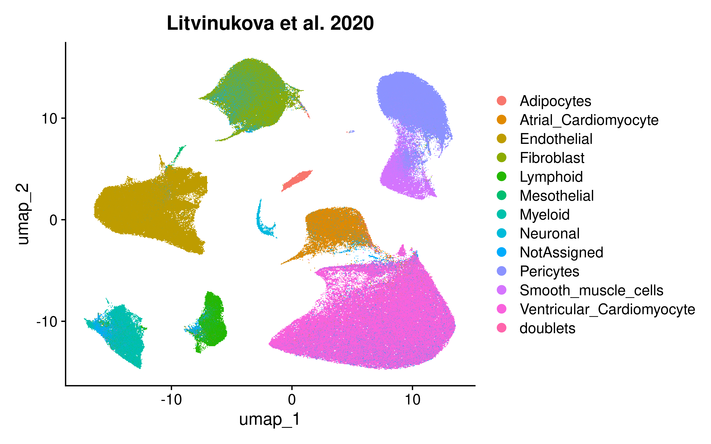
| Version | Author | Date |
|---|---|---|
| e4005f9 | GinoBonazza | 2025-02-26 |
genes_Litvinukova <- data.frame(gene = rownames(Litvinukova))
lncrna_symbol %in% genes_Litvinukova$gene[1] TRUE TRUE TRUE TRUE TRUELitvinukova_dotplot <- DotPlot(Litvinukova, features=lncrna_symbol, group.by="cell_type") +
theme(axis.text.x = element_text(angle = 45, hjust = 1, size = 14),
axis.text.y = element_text(size = 14),
axis.title.x = element_blank(),
axis.title.y = element_blank()) +
scale_y_discrete(limits = rev) +
ggtitle("Litvinukova et al. 2020")
Litvinukova_dotplot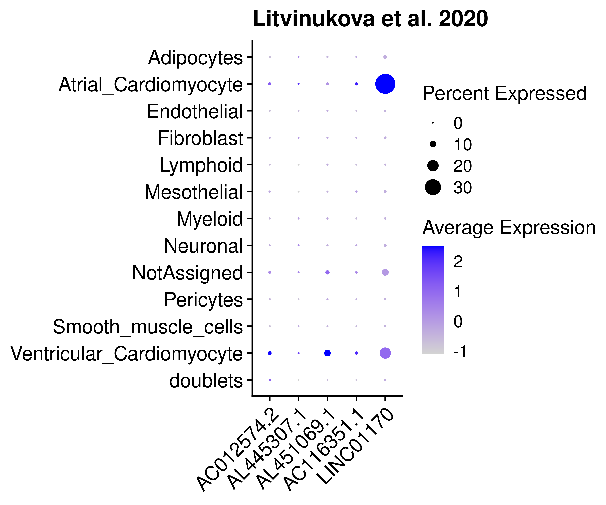
| Version | Author | Date |
|---|---|---|
| e4005f9 | GinoBonazza | 2025-02-26 |
Idents(Litvinukova) <- "cell_type"
Litvinukova_vlnplot <- Stacked_VlnPlot(Litvinukova, features = lncrna_symbol, x_lab_rotate = TRUE, pt.size = 0.001, plot_spacing = 0.05)
Litvinukova_vlnplot[[1]][[1]]$layers[[2]]$aes_params$alpha <- 0.3
Litvinukova_vlnplot[[2]][[1]]$layers[[2]]$aes_params$alpha <- 0.3
Litvinukova_vlnplot[[3]][[1]]$layers[[2]]$aes_params$alpha <- 0.3
Litvinukova_vlnplot[[4]][[1]]$layers[[2]]$aes_params$alpha <- 0.3
Litvinukova_vlnplot[[5]][[1]]$layers[[2]]$aes_params$alpha <- 0.3
Litvinukova_vlnplot <- wrap_plots(Litvinukova_vlnplot) +
plot_annotation(title = "Litvinukova et al. 2020") &
theme(plot.title = element_text(hjust = 0.5,
face = "bold",
size = 15)
)
print(Litvinukova_vlnplot)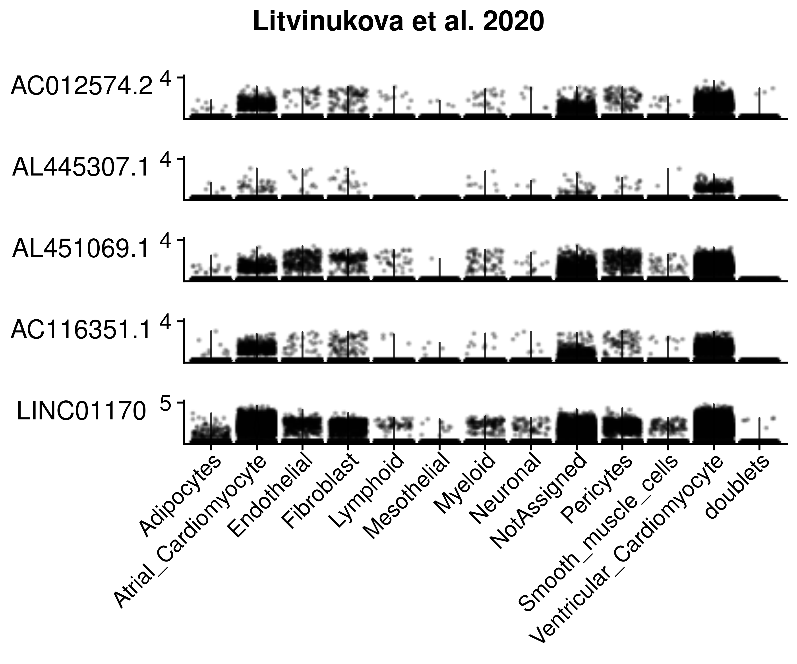
| Version | Author | Date |
|---|---|---|
| e4005f9 | GinoBonazza | 2025-02-26 |
Litvinukova_featureplot <- FeaturePlot_scCustom(Litvinukova, features = lncrna_symbol, num_columns = 3)
Litvinukova_featureplot <- wrap_plots(Litvinukova_featureplot) +
plot_annotation(title = "Litvinukova et al. 2020") &
theme(plot.title = element_text(hjust = 0.5,
face = "bold",
size = 20)
)
print(Litvinukova_featureplot)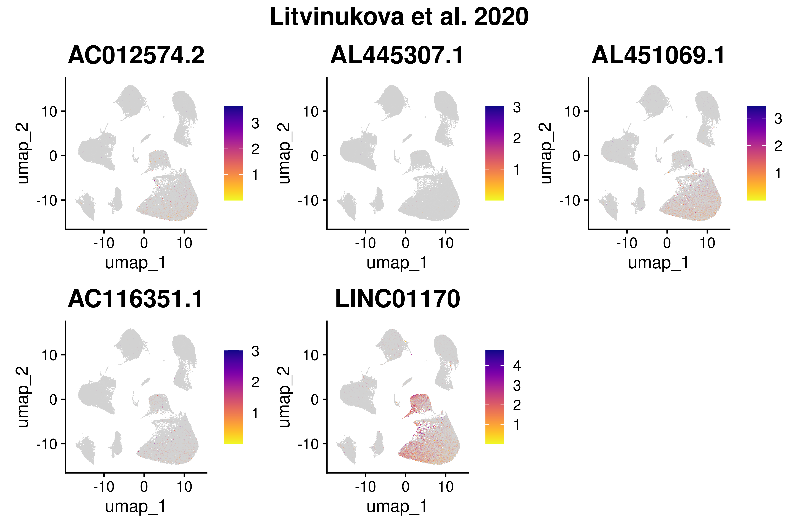
| Version | Author | Date |
|---|---|---|
| e4005f9 | GinoBonazza | 2025-02-26 |
Litvinukova_subset_V <- subset(Litvinukova, cell_type == "Ventricular_Cardiomyocyte" & region %in% c("RV", "LV"))
Litvinukova_subset_A <- subset(Litvinukova, cell_type == "Atrial_Cardiomyocyte" & region %in% c("RA", "LA"))
Idents(Litvinukova_subset_V) <- Litvinukova_subset_V$region
Idents(Litvinukova_subset_A) <- Litvinukova_subset_A$region
Litvinukova_RV_vs_LV <- FindMarkers(Litvinukova_subset_V, ident.1 = "RV", ident.2 = "LV", features = lncrna_symbol, logfc.threshold = 0, min.pct = 0.001)
Litvinukova_RA_vs_LA <- FindMarkers(Litvinukova_subset_A, ident.1 = "RA", ident.2 = "LA", features = lncrna_symbol, logfc.threshold = 0, min.pct = 0.001)reactable(Litvinukova_RV_vs_LV,
filterable = TRUE,
searchable = TRUE,
showPageSizeOptions = TRUE)reactable(Litvinukova_RA_vs_LA,
filterable = TRUE,
searchable = TRUE,
showPageSizeOptions = TRUE)Litvinukova_vlnplot_RV_vs_LV <- VlnPlot(Litvinukova_subset_V, features = lncrna_symbol, group.by = "region", ncol = 5, pt.size = 0.0001)
Litvinukova_vlnplot_RV_vs_LV[[1]]$layers[[2]]$aes_params$alpha <- 0.2
Litvinukova_vlnplot_RV_vs_LV[[2]]$layers[[2]]$aes_params$alpha <- 0.2
Litvinukova_vlnplot_RV_vs_LV[[3]]$layers[[2]]$aes_params$alpha <- 0.2
Litvinukova_vlnplot_RV_vs_LV[[4]]$layers[[2]]$aes_params$alpha <- 0.2
Litvinukova_vlnplot_RV_vs_LV[[5]]$layers[[2]]$aes_params$alpha <- 0.2
Litvinukova_vlnplot_RV_vs_LV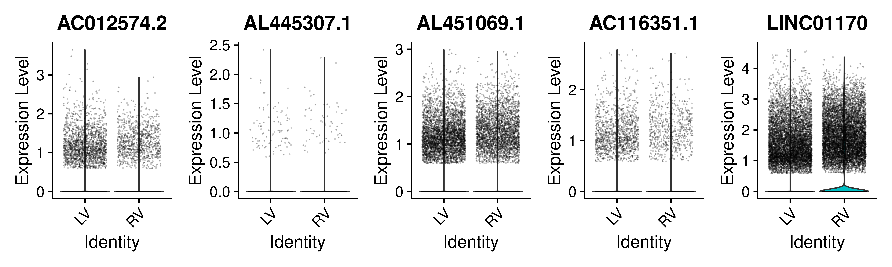
Litvinukova_vlnplot_RA_vs_LA <- VlnPlot(Litvinukova_subset_V, features = lncrna_symbol, group.by = "region", ncol = 5, pt.size = 0.0001)
Litvinukova_vlnplot_RA_vs_LA[[1]]$layers[[2]]$aes_params$alpha <- 0.2
Litvinukova_vlnplot_RA_vs_LA[[2]]$layers[[2]]$aes_params$alpha <- 0.2
Litvinukova_vlnplot_RA_vs_LA[[3]]$layers[[2]]$aes_params$alpha <- 0.2
Litvinukova_vlnplot_RA_vs_LA[[4]]$layers[[2]]$aes_params$alpha <- 0.2
Litvinukova_vlnplot_RA_vs_LA[[5]]$layers[[2]]$aes_params$alpha <- 0.2
Litvinukova_vlnplot_RA_vs_LA
Litvinukova_dotplot_RV_vs_LV <- DotPlot(Litvinukova_subset_V, features=lncrna_symbol, group.by="region", scale=F) +
theme(axis.text.x = element_text(angle = 45, hjust = 1, size = 14),
axis.text.y = element_text(size = 14),
axis.title.x = element_blank(),
axis.title.y = element_blank())
ggtitle("Litvinukova et al. 2020")$title
[1] "Litvinukova et al. 2020"
attr(,"class")
[1] "labels"Litvinukova_dotplot_RV_vs_LV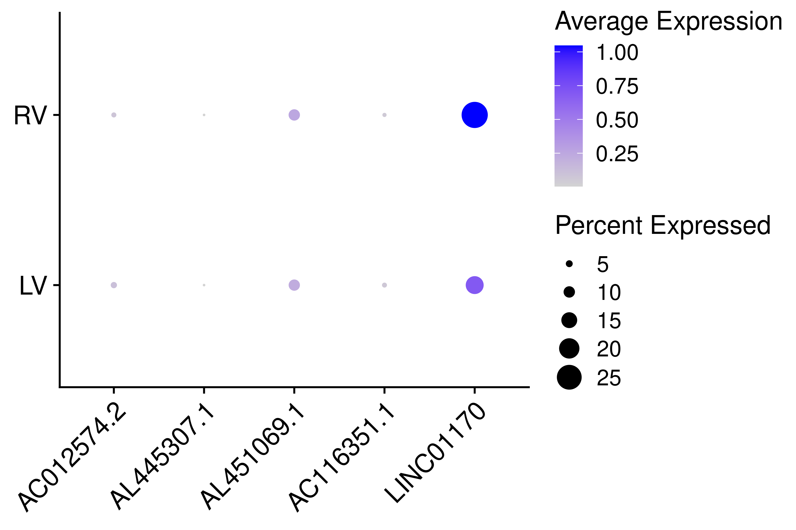
Litvinukova_dotplot_RA_vs_LA <- DotPlot(Litvinukova_subset_A, features=lncrna_symbol, group.by="region", scale=F) +
theme(axis.text.x = element_text(angle = 45, hjust = 1, size = 14),
axis.text.y = element_text(size = 14),
axis.title.x = element_blank(),
axis.title.y = element_blank())
ggtitle("Litvinukova et al. 2020")$title
[1] "Litvinukova et al. 2020"
attr(,"class")
[1] "labels"Litvinukova_dotplot_RA_vs_LA 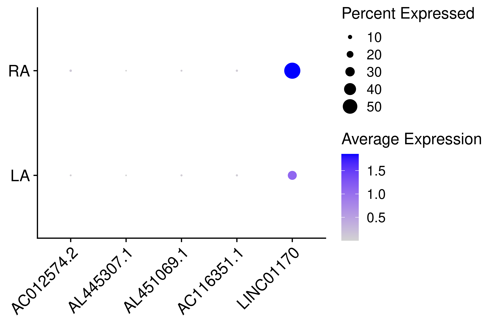
rm(Litvinukova)Koenig et al. 2022
load("/scratch/gbonaz/Heart_datasets/Koenig_2022/GSE183852_DCM_Integrated.Robj")
Koenig <- RefMerge
rm(RefMerge)
DefaultAssay(Koenig) <- "RNA"
Koenig <- NormalizeData(Koenig)Koenig_dimplot <- DimPlot(Koenig, group.by = "Names") + ggtitle("Koenig et al. 2022")
Koenig_dimplot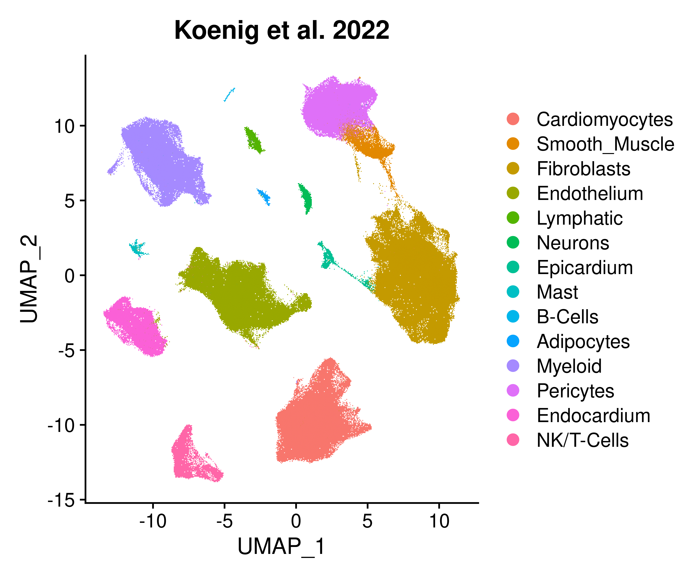
| Version | Author | Date |
|---|---|---|
| e4005f9 | GinoBonazza | 2025-02-26 |
genes_Koenig <- data.frame(gene = rownames(Koenig))
lncrna_symbol %in% genes_Koenig$gene[1] TRUE TRUE TRUE TRUE TRUEKoenig_dotplot <- DotPlot(Koenig, features=lncrna_symbol, group.by="Names") +
theme(axis.text.x = element_text(angle = 45, hjust = 1, size = 14),
axis.text.y = element_text(size = 14),
axis.title.x = element_blank(),
axis.title.y = element_blank()) +
scale_y_discrete(limits = rev) +
ggtitle("Koenig et al. 2022")
Koenig_dotplot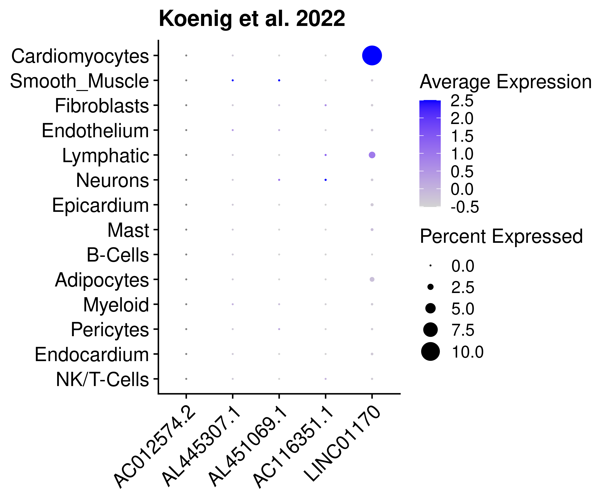
| Version | Author | Date |
|---|---|---|
| e4005f9 | GinoBonazza | 2025-02-26 |
Koenig_vlnplot <- Stacked_VlnPlot(Koenig, features = lncrna_symbol, x_lab_rotate = TRUE, pt.size = 0.001, plot_spacing = 0.05)
Koenig_vlnplot[[1]][[1]]$layers[[2]]$aes_params$alpha <- 0.2
Koenig_vlnplot[[2]][[1]]$layers[[2]]$aes_params$alpha <- 0.2
Koenig_vlnplot[[3]][[1]]$layers[[2]]$aes_params$alpha <- 0.2
Koenig_vlnplot[[4]][[1]]$layers[[2]]$aes_params$alpha <- 0.2
Koenig_vlnplot[[5]][[1]]$layers[[2]]$aes_params$alpha <- 0.2
Koenig_vlnplot <- wrap_plots(Koenig_vlnplot) +
plot_annotation(title = "Koenig et al. 2022") &
theme(plot.title = element_text(hjust = 0.5,
face = "bold",
size = 15)
)
print(Koenig_vlnplot)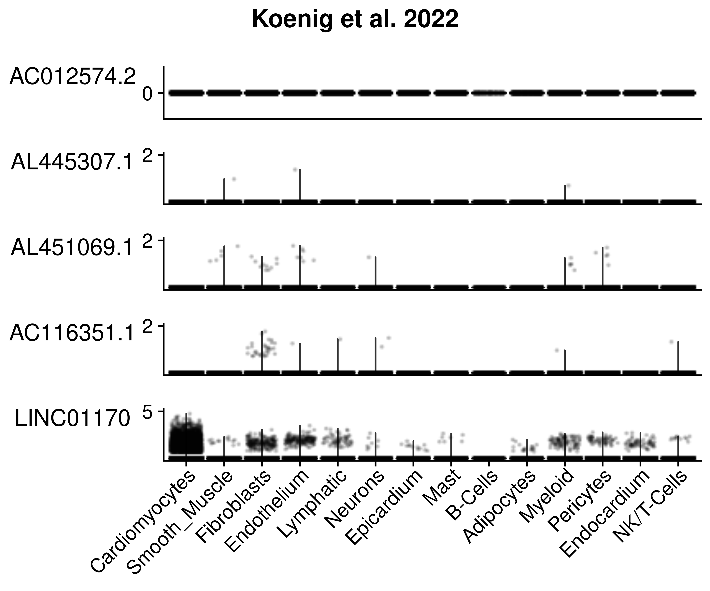
| Version | Author | Date |
|---|---|---|
| e4005f9 | GinoBonazza | 2025-02-26 |
Koenig_featureplot <- FeaturePlot_scCustom(Koenig, features = lncrna_symbol, num_columns = 3)
Koenig_featureplot <- wrap_plots(Koenig_featureplot) +
plot_annotation(title = "Koenig et al. 2022") &
theme(plot.title = element_text(hjust = 0.5,
face = "bold",
size = 20)
)
print(Koenig_featureplot)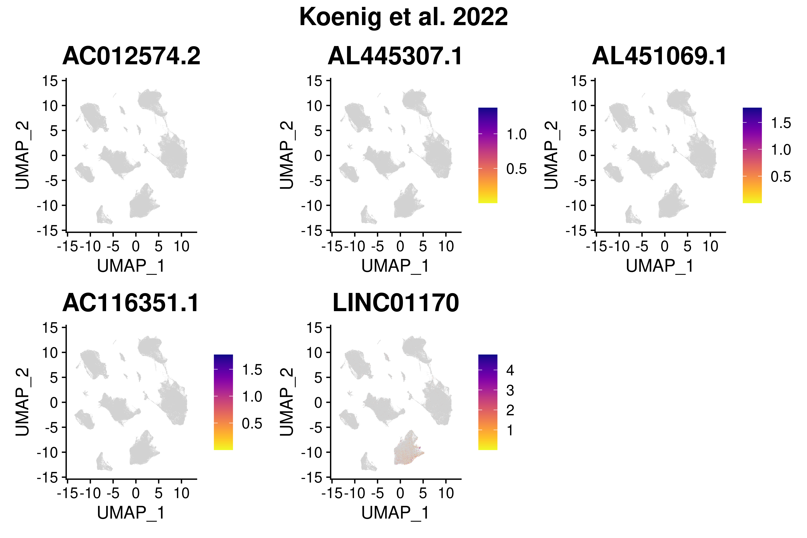
| Version | Author | Date |
|---|---|---|
| e4005f9 | GinoBonazza | 2025-02-26 |
Koenig_CM <- subset(Koenig, Names %in% c("Cardiomyocytes") & CondTech %in% c("DCM_SN", "Donor_SN"))
metadata <- Koenig_CM@meta.data %>%
dplyr::select(orig.ident, condition) %>%
unique()
rownames(metadata) <- metadata$orig.ident
reactable(metadata,
filterable = TRUE,
searchable = TRUE,
showPageSizeOptions = TRUE)Remove genes expressed in <1% of cells
expr_matrix <- GetAssayData(object = Koenig_CM, assay = "RNA", slot = "counts")
non_zero_cells <- rowSums(expr_matrix > 0)
total_cells <- ncol(expr_matrix)
percent_cells <- (non_zero_cells / total_cells) * 100
percent_stats <- data.frame(gene = rownames(expr_matrix), percentCells = percent_cells)
keep_genes <- rownames(dplyr::filter(percent_stats, percentCells > 1))
data <- Koenig_CM[which(rownames(Koenig_CM) %in% keep_genes),]
rm(keep_genes, non_zero_cells, expr_matrix, total_cells, percent_cells)
pseudocounts <- Seurat2PB(data, sample="orig.ident", cluster = "Names")
colnames(pseudocounts) <- pseudocounts$samples$sample
pseudocounts <- pseudocounts[, match(metadata$orig.ident, pseudocounts$samples$sample)]
all(metadata$donor_id == pseudocounts$samples$sample)[1] TRUEkeep_samples <- pseudocounts$samples$lib.size > 5e4
pseudocounts <- pseudocounts[, keep_samples]
keep_genes <- filterByExpr(pseudocounts)
pseudocounts <- pseudocounts[keep_genes, ]
rm(keep_samples, keep_genes, data)metadata$condition <- factor(metadata$condition, levels = c("Donor", "DCM"))
design<- model.matrix(~ condition, data = metadata)
pseudocounts <- normLibSizes(pseudocounts)
pseudocounts <- estimateDisp(pseudocounts, design)
fit <- glmQLFit(pseudocounts, design, robust=TRUE)
fit <- glmQLFTest(fit, coef = 2)
results_Koenig <- topTags(fit, n = Inf)$table
results_Koenig <- merge(results_Koenig, percent_stats[, c("gene", "percentCells")], by = "gene", all.x = FALSE)
results_Koenig$up_down <- ifelse(
results_Koenig$logFC > 0.5 & results_Koenig$FDR < 0.05, "Increased",
ifelse(results_Koenig$logFC < -0.5 & results_Koenig$FDR < 0.05, "Decreased",
"Not significant"
)
)
results_Koenig_lncRNA <- results_Koenig %>%
dplyr::filter(gene %in% lncrna_symbol)
reactable(results_Koenig_lncRNA,
filterable = TRUE,
searchable = TRUE,
showPageSizeOptions = TRUE)counts <- cpm(pseudocounts, log = TRUE)
counts <- counts[rownames(counts) %in% results_Koenig_lncRNA$gene, , drop = FALSE]
counts <- counts[, dplyr::arrange(metadata, condition)$orig.ident, drop = FALSE]
heat_colors <- rev(brewer.pal(11, "PuOr"))
pheatmap::pheatmap(counts,
color = heat_colors,
cluster_rows = F,
annotation_col = dplyr::select(metadata, condition),
border_color = NA,
fontsize = 10,
scale = "row",
cluster_cols=F,
fontsize_row = 15,
show_rownames = T,
show_colnames = F,
cellheight = 15,
legend_breaks = c(-1.5, 0, 1.5)
)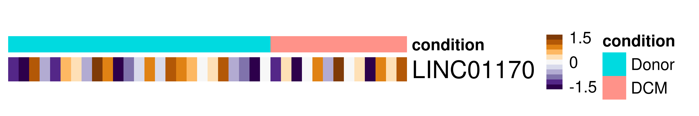
Koenig_dotplot_DE <- VlnPlot(Koenig_CM, features=results_Koenig_lncRNA$gene, group.by="condition") +
ggtitle("Koenig et al. 2022") + NoLegend()
Koenig_dotplot_DE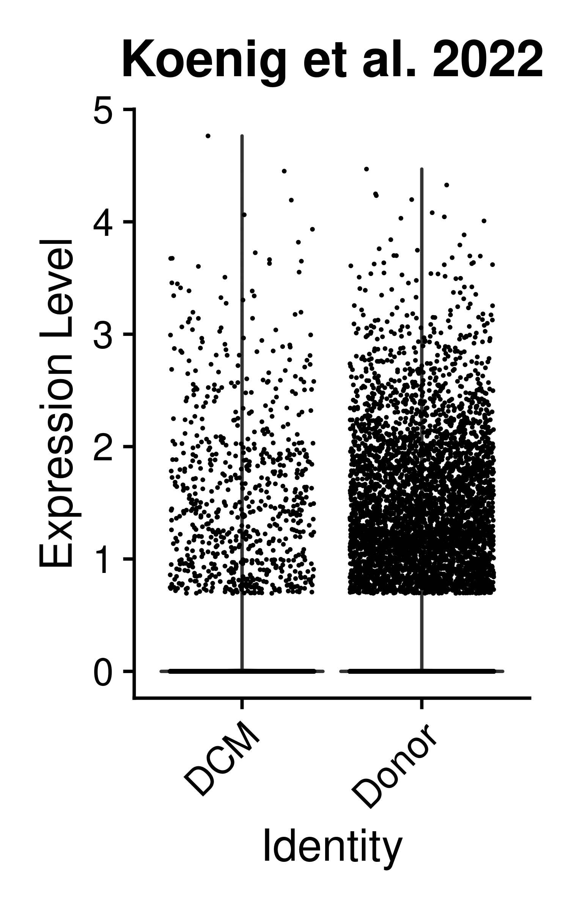
rm(Koenig)Chaffin et al. 2022
Chaffin <- LoadH5Seurat("/scratch/gbonaz/Heart_datasets/Chaffin_2022/human_dcm_hcm_scportal_03.17.2022.h5seurat")
Chaffin@assays$cellranger_raw <- NULL
saveRDS(Chaffin, "/scratch/gbonaz/Heart_datasets/Chaffin_2022/Chaffin_2022.rds")
Chaffin <- readRDS("/scratch/gbonaz/Heart_datasets/Chaffin_2022/Chaffin_2022.rds")
DefaultAssay(Chaffin) <- "RNA"
Chaffin <- NormalizeData(Chaffin)Chaffin_dimplot <- DimPlot(Chaffin, group.by = "cell_type_leiden0.6") + ggtitle("Chaffin et al. 2022")
Chaffin_dimplot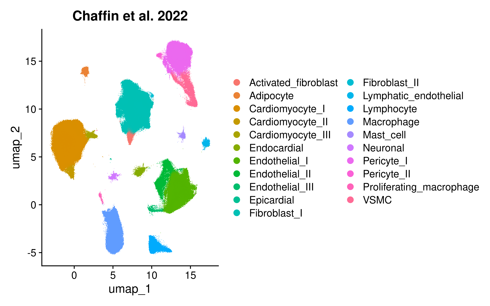
| Version | Author | Date |
|---|---|---|
| e4005f9 | GinoBonazza | 2025-02-26 |
genes_Chaffin <- data.frame(gene = rownames(Chaffin))
lncrna_symbol %in% genes_Chaffin$gene[1] TRUE TRUE TRUE TRUE TRUEChaffin_dotplot <- DotPlot(Chaffin, features=lncrna_symbol, group.by="cell_type_leiden0.6") +
theme(axis.text.x = element_text(angle = 45, hjust = 1, size = 14),
axis.text.y = element_text(size = 14),
axis.title.x = element_blank(),
axis.title.y = element_blank()) +
scale_y_discrete(limits = rev) +
ggtitle("Chaffin et al. 2022")
Chaffin_dotplot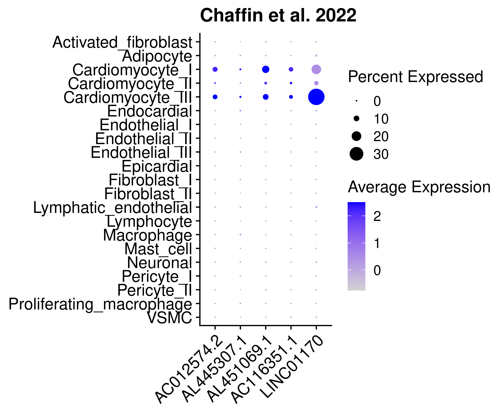
| Version | Author | Date |
|---|---|---|
| e4005f9 | GinoBonazza | 2025-02-26 |
Idents(Chaffin) <- "cell_type_leiden0.6"
Chaffin_vlnplot <- Stacked_VlnPlot(Chaffin, features = lncrna_symbol, x_lab_rotate = TRUE, pt.size = 0.001, plot_spacing = 0.05)
Chaffin_vlnplot[[1]][[1]]$layers[[2]]$aes_params$alpha <- 0.3
Chaffin_vlnplot[[2]][[1]]$layers[[2]]$aes_params$alpha <- 0.3
Chaffin_vlnplot[[3]][[1]]$layers[[2]]$aes_params$alpha <- 0.3
Chaffin_vlnplot[[4]][[1]]$layers[[2]]$aes_params$alpha <- 0.3
Chaffin_vlnplot[[5]][[1]]$layers[[2]]$aes_params$alpha <- 0.3
Chaffin_vlnplot <- wrap_plots(Chaffin_vlnplot) +
plot_annotation(title = "Chaffin et al. 2022") &
theme(plot.title = element_text(hjust = 0.5,
face = "bold",
size = 15)
)
print(Chaffin_vlnplot)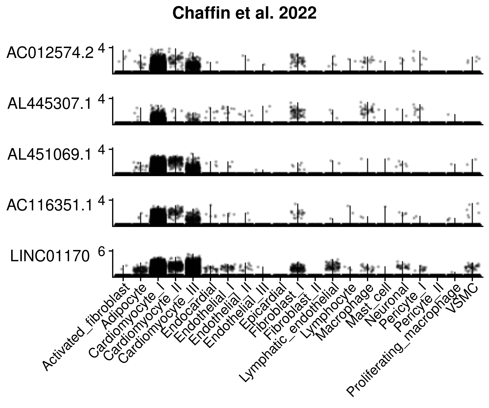
| Version | Author | Date |
|---|---|---|
| e4005f9 | GinoBonazza | 2025-02-26 |
Chaffin_featureplot <- FeaturePlot_scCustom(Chaffin, features = lncrna_symbol, num_columns = 3)
Chaffin_featureplot <- wrap_plots(Chaffin_featureplot) +
plot_annotation(title = "Chaffin et al. 2022") &
theme(plot.title = element_text(hjust = 0.5,
face = "bold",
size = 20)
)
print(Chaffin_featureplot)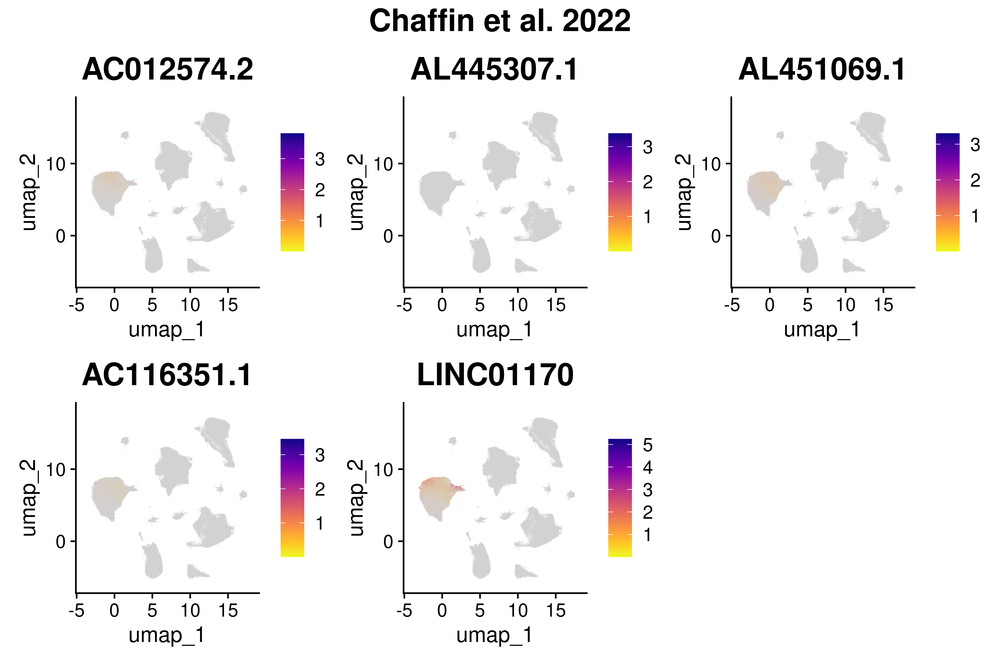
| Version | Author | Date |
|---|---|---|
| e4005f9 | GinoBonazza | 2025-02-26 |
Chaffin_CM <- subset(Chaffin, cell_type_leiden0.6 %in% c("Cardiomyocyte_I", "Cardiomyocyte_II", "Cardiomyocyte_III"))
Chaffin_CM$cell_type <- "Cardiomyocytes"
metadata <- Chaffin_CM@meta.data %>%
dplyr::select(donor_id, disease) %>%
unique()
rownames(metadata) <- metadata$donor_id
reactable(metadata,
filterable = TRUE,
searchable = TRUE,
showPageSizeOptions = TRUE)Remove genes expressed in <1% of cells
expr_matrix <- GetAssayData(object = Chaffin_CM, assay = "RNA", slot = "counts")
non_zero_cells <- rowSums(expr_matrix > 0)
total_cells <- ncol(expr_matrix)
percent_cells <- (non_zero_cells / total_cells) * 100
percent_stats <- data.frame(gene = rownames(expr_matrix), percentCells = percent_cells)
keep_genes <- rownames(dplyr::filter(percent_stats, percentCells > 1))
data <- Chaffin_CM[which(rownames(Chaffin_CM) %in% keep_genes),]
rm(keep_genes, non_zero_cells, expr_matrix, total_cells, percent_cells)
pseudocounts <- Seurat2PB(data, sample="donor_id", cluster = "cell_type")
colnames(pseudocounts) <- pseudocounts$samples$sample
pseudocounts <- pseudocounts[, match(metadata$donor_id, pseudocounts$samples$sample)]
all(metadata$donor_id == pseudocounts$samples$sample)[1] TRUEkeep_samples <- pseudocounts$samples$lib.size > 5e4
pseudocounts <- pseudocounts[, keep_samples]
keep_genes <- filterByExpr(pseudocounts)
pseudocounts <- pseudocounts[keep_genes, ]
rm(keep_samples, keep_genes, data)metadata$disease <- factor(metadata$disease, levels = c("NF", "DCM", "HCM"))
design<- model.matrix(~ disease, data = metadata)
pseudocounts <- normLibSizes(pseudocounts)
pseudocounts <- estimateDisp(pseudocounts, design)
fit <- glmQLFit(pseudocounts, design, robust=TRUE)
contrast_DCM_vs_NF <- makeContrasts(diseaseDCM, levels=design)
results_Chaffin_DCM_vs_NF <- glmQLFTest(fit, contrast=contrast_DCM_vs_NF)
results_Chaffin_DCM_vs_NF <- topTags(results_Chaffin_DCM_vs_NF, n = Inf)$table
results_Chaffin_DCM_vs_NF <- merge(results_Chaffin_DCM_vs_NF, percent_stats[, c("gene", "percentCells")], by = "gene", all.x = FALSE)
results_Chaffin_DCM_vs_NF$up_down <- ifelse(
results_Chaffin_DCM_vs_NF$logFC > 0.5 & results_Chaffin_DCM_vs_NF$FDR < 0.05, "Increased",
ifelse(results_Chaffin_DCM_vs_NF$logFC < -0.5 & results_Chaffin_DCM_vs_NF$FDR < 0.05, "Decreased",
"Not significant"
)
)
results_Chaffin_DCM_vs_NF_lncRNA <- results_Chaffin_DCM_vs_NF %>%
dplyr::filter(gene %in% lncrna_symbol)
results_Chaffin_DCM_vs_NF_lncRNA$Contrast <- "DCM_vs_NF"
contrast_HCM_vs_NF <- makeContrasts(diseaseHCM, levels=design)
results_Chaffin_HCM_vs_NF <- glmQLFTest(fit, contrast=contrast_HCM_vs_NF)
results_Chaffin_HCM_vs_NF <- topTags(results_Chaffin_HCM_vs_NF, n = Inf)$table
results_Chaffin_HCM_vs_NF <- merge(results_Chaffin_HCM_vs_NF, percent_stats[, c("gene", "percentCells")], by = "gene", all.x = FALSE)
results_Chaffin_HCM_vs_NF$up_down <- ifelse(
results_Chaffin_HCM_vs_NF$logFC > 0.5 & results_Chaffin_HCM_vs_NF$FDR < 0.05, "Increased",
ifelse(results_Chaffin_HCM_vs_NF$logFC < -0.5 & results_Chaffin_HCM_vs_NF$FDR < 0.05, "Decreased",
"Not significant"
)
)
results_Chaffin_HCM_vs_NF_lncRNA <- results_Chaffin_HCM_vs_NF %>%
dplyr::filter(gene %in% lncrna_symbol)
results_Chaffin_HCM_vs_NF_lncRNA$Contrast <- "HCM_vs_NF"
contrast_DCM_vs_HCM <- makeContrasts(diseaseDCM - diseaseHCM, levels=design)
results_Chaffin_DCM_vs_HCM <- glmQLFTest(fit, contrast=contrast_DCM_vs_HCM)
results_Chaffin_DCM_vs_HCM <- topTags(results_Chaffin_DCM_vs_HCM, n = Inf)$table
results_Chaffin_DCM_vs_HCM <- merge(results_Chaffin_DCM_vs_HCM, percent_stats[, c("gene", "percentCells")], by = "gene", all.x = FALSE)
results_Chaffin_DCM_vs_HCM$up_down <- ifelse(
results_Chaffin_DCM_vs_HCM$logFC > 0.5 & results_Chaffin_DCM_vs_HCM$FDR < 0.05, "Increased",
ifelse(results_Chaffin_DCM_vs_HCM$logFC < -0.5 & results_Chaffin_DCM_vs_HCM$FDR < 0.05, "Decreased",
"Not significant"
)
)
results_Chaffin_DCM_vs_HCM_lncRNA <- results_Chaffin_DCM_vs_HCM %>%
dplyr::filter(gene %in% lncrna_symbol)
results_Chaffin_DCM_vs_HCM_lncRNA$Contrast <- "DCM_vs_HCM"
reactable(results_Chaffin_DCM_vs_NF_lncRNA,
filterable = TRUE,
searchable = TRUE,
showPageSizeOptions = TRUE)reactable(results_Chaffin_HCM_vs_NF_lncRNA,
filterable = TRUE,
searchable = TRUE,
showPageSizeOptions = TRUE)reactable(results_Chaffin_DCM_vs_HCM_lncRNA,
filterable = TRUE,
searchable = TRUE,
showPageSizeOptions = TRUE)counts <- cpm(pseudocounts, log = TRUE)
counts <- counts[rownames(counts) %in% results_Chaffin_DCM_vs_NF_lncRNA$gene, , drop = FALSE]
metadata_matched <- metadata[match(colnames(counts), metadata$donor_id), ]
# Step 2: Check they align
stopifnot(all(colnames(counts) == metadata_matched$donor_id))
# Step 3: Reorder both by disease
order_idx <- order(metadata_matched$disease)
counts <- counts[, order_idx]
metadata_matched <- metadata_matched[order_idx, ]
# Step 4: Heatmap with matched annotations
heat_colors <- rev(brewer.pal(11, "PuOr"))
pheatmap::pheatmap(
counts,
color = heat_colors,
cluster_rows = FALSE,
cluster_cols = FALSE,
annotation_col = dplyr::select(metadata_matched, disease),
border_color = NA,
fontsize = 10,
scale = "row",
fontsize_row = 15,
show_rownames = TRUE,
show_colnames = FALSE,
cellheight = 15,
legend_breaks = c(-1.5, 0, 1.5)
)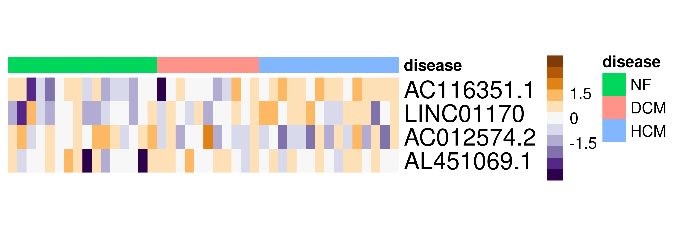
Chaffin_dotplot_DE <- VlnPlot(Chaffin_CM, features=results_Chaffin_DCM_vs_HCM_lncRNA$gene, group.by="disease", ncol = 4, pt.size = 0.001) +
ggtitle("Chaffin et al. 2022") + NoLegend()
Chaffin_dotplot_DE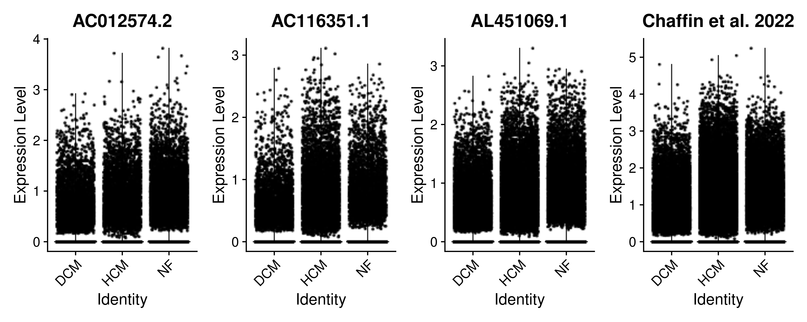
rm(Chaffin)Reichart et al. 2022
Reichart <- readRDS("/scratch/gbonaz/Heart_datasets/Reichart_2022/DCM_ACM_heart_cell_atlas.rds")
DefaultAssay(Reichart) <- "RNA"
Reichart <- NormalizeData(Reichart)Reichart_dimplot <- DimPlot(Reichart, group.by = "cell_type") + ggtitle("Reichart et al. 2022")
Reichart_dimplot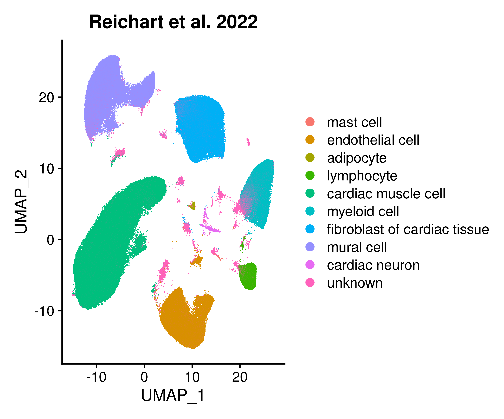
| Version | Author | Date |
|---|---|---|
| e4005f9 | GinoBonazza | 2025-02-26 |
genes_Reichart <- data.frame(gene = rownames(Reichart))
lncrna_symbol %in% genes_Reichart$gene[1] FALSE FALSE FALSE FALSE FALSElncrna_ens %in% genes_Reichart$gene[1] TRUE TRUE TRUE TRUE TRUEReichart_dotplot <- DotPlot(Reichart, features=lncrna_ens, group.by="cell_type") +
theme(axis.text.x = element_text(angle = 45, hjust = 1, size = 14),
axis.text.y = element_text(size = 14),
axis.title.x = element_blank(),
axis.title.y = element_blank()) +
scale_y_discrete(limits = rev) +
ggtitle("Reichart et al. 2022")
Reichart_dotplot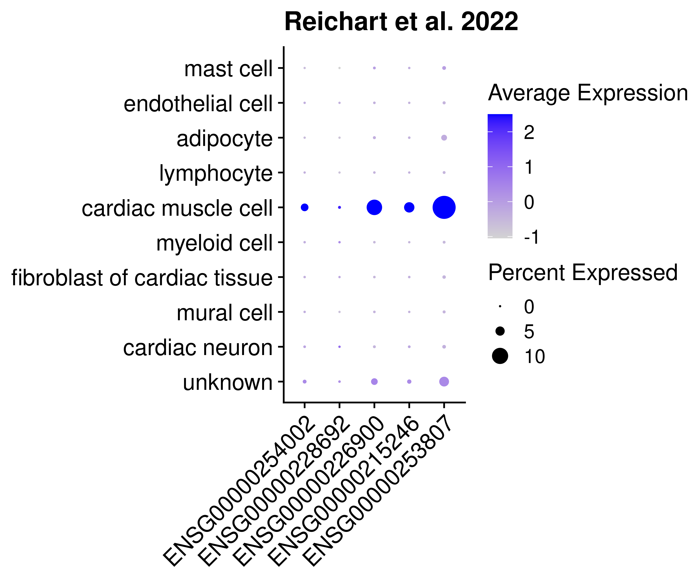
| Version | Author | Date |
|---|---|---|
| e4005f9 | GinoBonazza | 2025-02-26 |
Idents(Reichart) <- "cell_type"
Reichart_vlnplot <- Stacked_VlnPlot(Reichart, features = lncrna_ens, x_lab_rotate = TRUE, pt.size = 0.001, plot_spacing = 0.05)
Reichart_vlnplot[[1]][[1]]$layers[[2]]$aes_params$alpha <- 0.3
Reichart_vlnplot[[2]][[1]]$layers[[2]]$aes_params$alpha <- 0.3
Reichart_vlnplot[[3]][[1]]$layers[[2]]$aes_params$alpha <- 0.3
Reichart_vlnplot[[4]][[1]]$layers[[2]]$aes_params$alpha <- 0.3
Reichart_vlnplot[[5]][[1]]$layers[[2]]$aes_params$alpha <- 0.3
Reichart_vlnplot <- wrap_plots(Reichart_vlnplot) +
plot_annotation(title = "Reichart et al. 2022") &
theme(plot.title = element_text(hjust = 0.5,
face = "bold",
size = 15)
)
print(Reichart_vlnplot)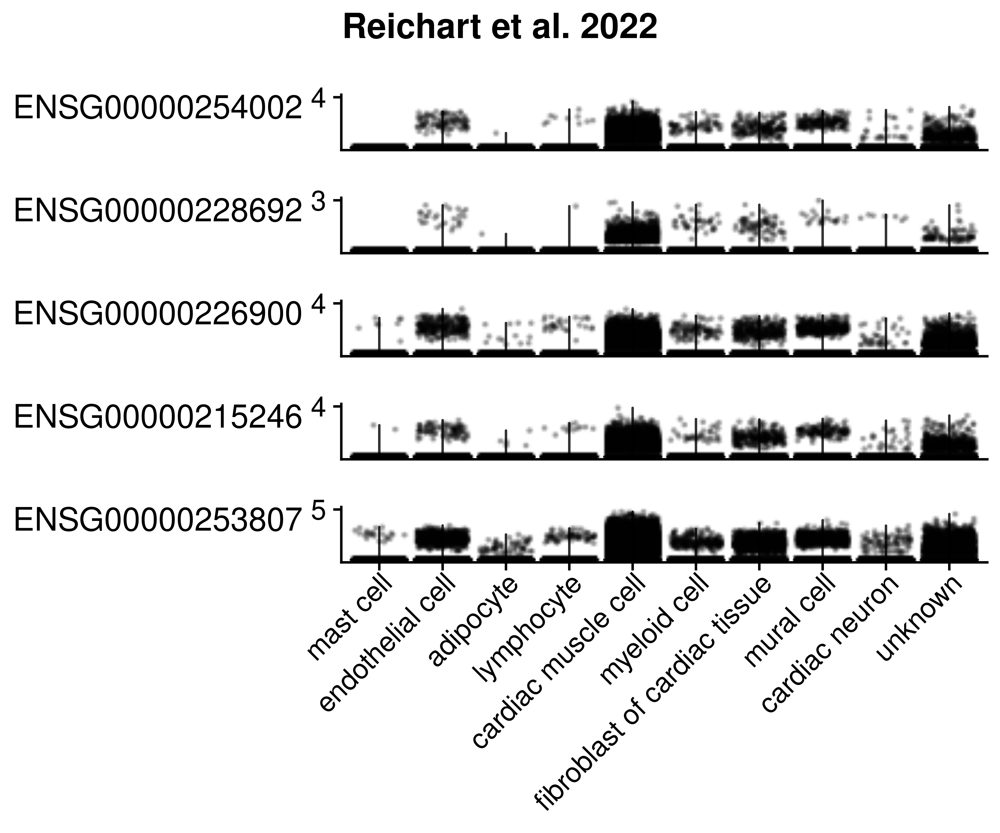
| Version | Author | Date |
|---|---|---|
| e4005f9 | GinoBonazza | 2025-02-26 |
Reichart_featureplot <- FeaturePlot_scCustom(Reichart, features = lncrna_ens, num_columns = 3)
Reichart_featureplot <- wrap_plots(Reichart_featureplot) +
plot_annotation(title = "Reichart et al. 2022") &
theme(plot.title = element_text(hjust = 0.5,
face = "bold",
size = 20)
)
print(Reichart_featureplot)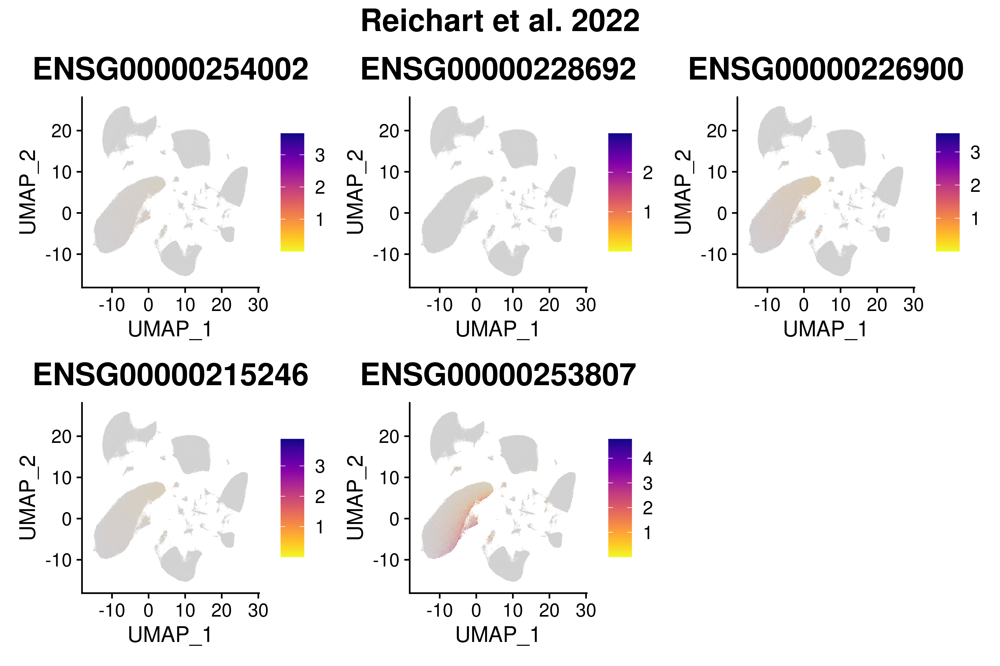
| Version | Author | Date |
|---|---|---|
| e4005f9 | GinoBonazza | 2025-02-26 |
Reichart_subset_V <- subset(Reichart, cell_type == "cardiac muscle cell" & Region_x %in% c("RV", "LV"))
Idents(Reichart_subset_V) <- Reichart_subset_V$Region_x
Reichart_RV_vs_LV <- FindMarkers(Reichart_subset_V, ident.1 = "RV", ident.2 = "LV", features = lncrna_ens, logfc.threshold = 0, min.pct = 0.001)reactable(Reichart_RV_vs_LV,
filterable = TRUE,
searchable = TRUE,
showPageSizeOptions = TRUE)Reichart_vlnplot_RV_vs_LV <- VlnPlot(Reichart_subset_V, features = lncrna_ens, group.by = "Region_x", ncol = 5, pt.size = 0.0001)
Reichart_vlnplot_RV_vs_LV[[1]]$layers[[2]]$aes_params$alpha <- 0.2
Reichart_vlnplot_RV_vs_LV[[2]]$layers[[2]]$aes_params$alpha <- 0.2
Reichart_vlnplot_RV_vs_LV[[3]]$layers[[2]]$aes_params$alpha <- 0.2
Reichart_vlnplot_RV_vs_LV[[4]]$layers[[2]]$aes_params$alpha <- 0.2
Reichart_vlnplot_RV_vs_LV[[5]]$layers[[2]]$aes_params$alpha <- 0.2
Reichart_vlnplot_RV_vs_LV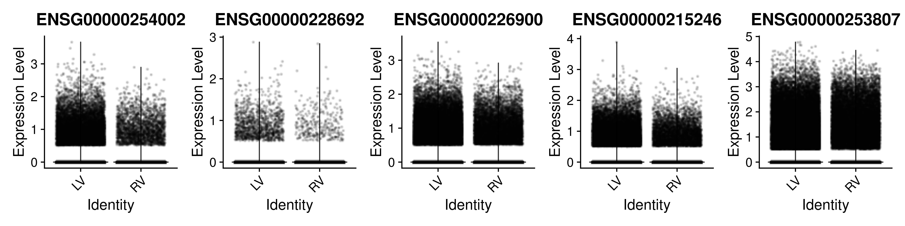
Reichart_dotplot_RV_vs_LV <- DotPlot(Reichart_subset_V, features=lncrna_ens, group.by="Region_x", scale=F) +
theme(axis.text.x = element_text(angle = 45, hjust = 1, size = 14),
axis.text.y = element_text(size = 14),
axis.title.x = element_blank(),
axis.title.y = element_blank(),
plot.margin = unit(c(0, 0, 0, 0.5), "inch"))
ggtitle("Reichart et al. 2020")$title
[1] "Reichart et al. 2020"
attr(,"class")
[1] "labels"Reichart_dotplot_RV_vs_LV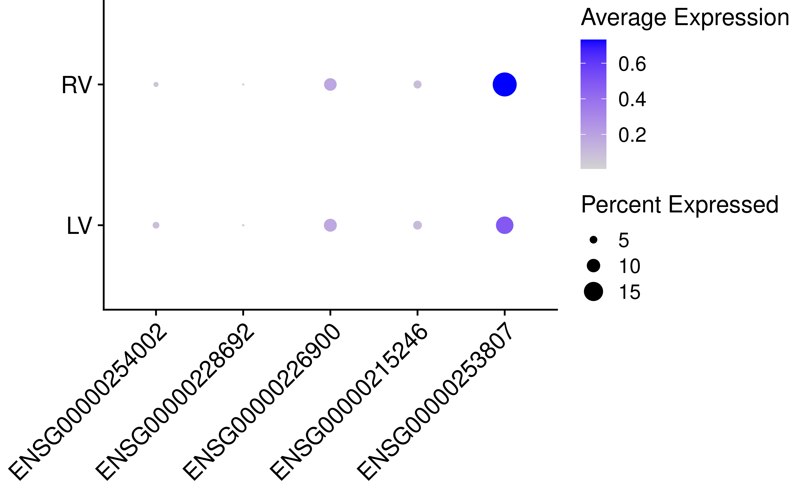
Reichart_CM_RV <- subset(Reichart, cell_type %in% c("cardiac muscle cell") & disease %in% c("normal", "dilated cardiomyopathy") & Region_x == "RV")
metadata_RV <- Reichart_CM_RV@meta.data %>%
dplyr::select(donor_id, disease) %>%
unique()
rownames(metadata_RV) <- metadata_RV$donor_id
reactable(metadata_RV,
filterable = TRUE,
searchable = TRUE,
showPageSizeOptions = TRUE)Reichart_CM_LV <- subset(Reichart, cell_type %in% c("cardiac muscle cell") & disease %in% c("normal", "dilated cardiomyopathy") & Region_x == "LV")
metadata_LV <- Reichart_CM_LV@meta.data %>%
dplyr::select(donor_id, disease) %>%
unique()
rownames(metadata_LV) <- metadata_LV$donor_id
reactable(metadata_LV,
filterable = TRUE,
searchable = TRUE,
showPageSizeOptions = TRUE)expr_matrix <- GetAssayData(object = Reichart_CM_RV, assay = "RNA", slot = "counts")
non_zero_cells <- rowSums(expr_matrix > 0)
total_cells <- ncol(expr_matrix)
percent_cells <- (non_zero_cells / total_cells) * 100
percent_stats <- data.frame(gene = rownames(expr_matrix), percentCells = percent_cells)
keep_genes <- rownames(dplyr::filter(percent_stats, percentCells > 1))
data <- Reichart_CM_RV[which(rownames(Reichart_CM_RV) %in% keep_genes),]
rm(keep_genes, non_zero_cells, expr_matrix, total_cells, percent_cells)
pseudocounts <- Seurat2PB(data, sample="donor_id", cluster = "cell_type")
colnames(pseudocounts) <- pseudocounts$samples$sample
pseudocounts <- pseudocounts[, match(metadata_RV$donor_id, pseudocounts$samples$sample)]
all(metadata$donor_id == pseudocounts$samples$sample)[1] FALSEkeep_samples <- pseudocounts$samples$lib.size > 5e4
pseudocounts <- pseudocounts[, keep_samples]
keep_genes <- filterByExpr(pseudocounts)
pseudocounts <- pseudocounts[keep_genes, ]
rm(keep_samples, keep_genes, data)metadata_RV$disease <- factor(metadata_RV$disease, levels = c("normal", "dilated cardiomyopathy"))
design<- model.matrix(~ disease, data = metadata_RV)
pseudocounts <- normLibSizes(pseudocounts)
pseudocounts <- estimateDisp(pseudocounts, design)
fit <- glmQLFit(pseudocounts, design, robust=TRUE)
fit <- glmQLFTest(fit, coef = 2)
results_Reichart_RV <- topTags(fit, n = Inf)$table
results_Reichart_RV <- merge(results_Reichart_RV, percent_stats[, c("gene", "percentCells")], by = "gene", all.x = FALSE)
results_Reichart_RV$up_down <- ifelse(
results_Reichart_RV$logFC > 0.5 & results_Reichart_RV$FDR < 0.05, "Increased",
ifelse(results_Reichart_RV$logFC < -0.5 & results_Reichart_RV$FDR < 0.05, "Decreased",
"Not significant"
)
)
results_Reichart_RV_lncRNA <- results_Reichart_RV %>%
dplyr::filter(gene %in% lncrna_ens)
reactable(results_Reichart_RV_lncRNA,
filterable = TRUE,
searchable = TRUE,
showPageSizeOptions = TRUE)counts <- cpm(pseudocounts, log = TRUE)
counts <- counts[rownames(counts) %in% results_Reichart_RV_lncRNA$gene, , drop = FALSE]
metadata_matched <- metadata_RV[match(colnames(counts), metadata_RV$donor_id), ]
stopifnot(all(colnames(counts) == metadata_matched$donor_id))
order_idx <- order(metadata_matched$disease)
counts <- counts[, order_idx]
metadata_matched <- metadata_matched[order_idx, ]
heat_colors <- rev(brewer.pal(11, "PuOr"))
pheatmap::pheatmap(counts,
color = heat_colors,
cluster_rows = F,
annotation_col = dplyr::select(metadata_matched, disease),
border_color = NA,
fontsize = 10,
scale = "row",
cluster_cols=F,
fontsize_row = 15,
show_rownames = T,
show_colnames = F,
cellheight = 15,
legend_breaks = c(-1.5, 0, 1.5)
)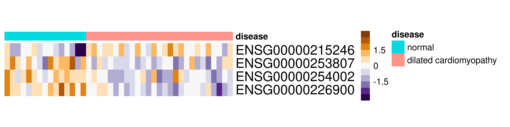
expr_matrix <- GetAssayData(object = Reichart_CM_LV, assay = "RNA", slot = "counts")
non_zero_cells <- rowSums(expr_matrix > 0)
total_cells <- ncol(expr_matrix)
percent_cells <- (non_zero_cells / total_cells) * 100
percent_stats <- data.frame(gene = rownames(expr_matrix), percentCells = percent_cells)
keep_genes <- rownames(dplyr::filter(percent_stats, percentCells > 1))
data <- Reichart_CM_LV[which(rownames(Reichart_CM_LV) %in% keep_genes),]
rm(keep_genes, non_zero_cells, expr_matrix, total_cells, percent_cells)
pseudocounts <- Seurat2PB(data, sample="donor_id", cluster = "cell_type")
colnames(pseudocounts) <- pseudocounts$samples$sample
pseudocounts <- pseudocounts[, match(metadata_LV$donor_id, pseudocounts$samples$sample)]
all(metadata$donor_id == pseudocounts$samples$sample)[1] FALSEkeep_samples <- pseudocounts$samples$lib.size > 5e4
pseudocounts <- pseudocounts[, keep_samples]
keep_genes <- filterByExpr(pseudocounts)
pseudocounts <- pseudocounts[keep_genes, ]
rm(keep_samples, keep_genes, data)metadata_LV$disease <- factor(metadata_LV$disease, levels = c("normal", "dilated cardiomyopathy"))
design<- model.matrix(~ disease, data = metadata_LV)
pseudocounts <- normLibSizes(pseudocounts)
pseudocounts <- estimateDisp(pseudocounts, design)
fit <- glmQLFit(pseudocounts, design, robust=TRUE)
fit <- glmQLFTest(fit, coef = 2)
results_Reichart_LV <- topTags(fit, n = Inf)$table
results_Reichart_LV <- merge(results_Reichart_LV, percent_stats[, c("gene", "percentCells")], by = "gene", all.x = FALSE)
results_Reichart_LV$up_down <- ifelse(
results_Reichart_LV$logFC > 0.5 & results_Reichart_LV$FDR < 0.05, "Increased",
ifelse(results_Reichart_LV$logFC < -0.5 & results_Reichart_LV$FDR < 0.05, "Decreased",
"Not significant"
)
)
results_Reichart_LV_lncRNA <- results_Reichart_LV %>%
dplyr::filter(gene %in% lncrna_ens)
reactable(results_Reichart_LV_lncRNA,
filterable = TRUE,
searchable = TRUE,
showPageSizeOptions = TRUE)counts <- cpm(pseudocounts, log = TRUE)
counts <- counts[rownames(counts) %in% results_Reichart_LV_lncRNA$gene, , drop = FALSE]
metadata_matched <- metadata_LV[match(colnames(counts), metadata_LV$donor_id), ]
stopifnot(all(colnames(counts) == metadata_matched$donor_id))
order_idx <- order(metadata_matched$disease)
counts <- counts[, order_idx]
metadata_matched <- metadata_matched[order_idx, ]
heat_colors <- rev(brewer.pal(11, "PuOr"))
pheatmap::pheatmap(counts,
color = heat_colors,
cluster_rows = F,
annotation_col = dplyr::select(metadata_matched, disease),
border_color = NA,
fontsize = 10,
scale = "row",
cluster_cols=F,
fontsize_row = 15,
show_rownames = T,
show_colnames = F,
cellheight = 15,
legend_breaks = c(-1.5, 0, 1.5)
)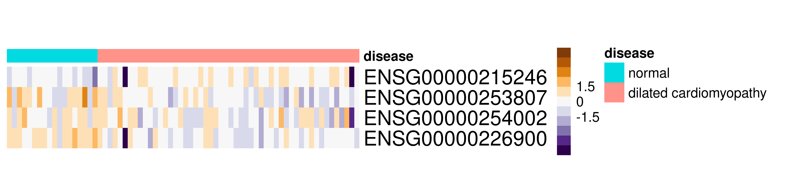
Reichart_dotplot_DE <- VlnPlot(Reichart_CM_RV, features=results_Reichart_RV_lncRNA$gene, group.by="disease", ncol = 4) +
ggtitle("Reichart et al. 2022") + NoLegend()
Reichart_dotplot_DE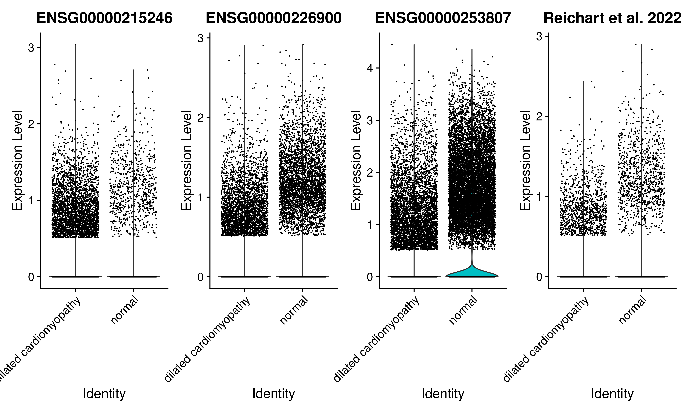
Reichart_dotplot_DE <- VlnPlot(Reichart_CM_LV, features=results_Reichart_LV_lncRNA$gene, group.by="disease", ncol = 4) +
ggtitle("Reichart et al. 2022") + NoLegend()
Reichart_dotplot_DE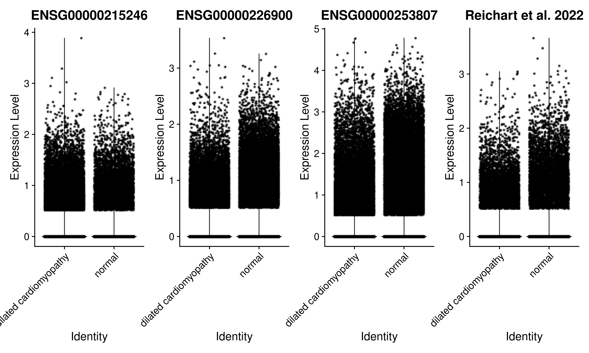
rm(Reichart)DCM RV
DCM_RV <- readRDS(here::here("output", "QC_integration_annotation_26", "DCM_RV_integrated.rds"))
DCM_RV@assays$RAW <- NULL
DCM_RV@assays$SCT <- NULL
DefaultAssay(DCM_RV) <- "RNA"
DCM_RV <- NormalizeData(DCM_RV)DCM_RV_dimplot <- DimPlot(DCM_RV, group.by = "cell_type") + ggtitle("DCM RV")
DCM_RV_dimplot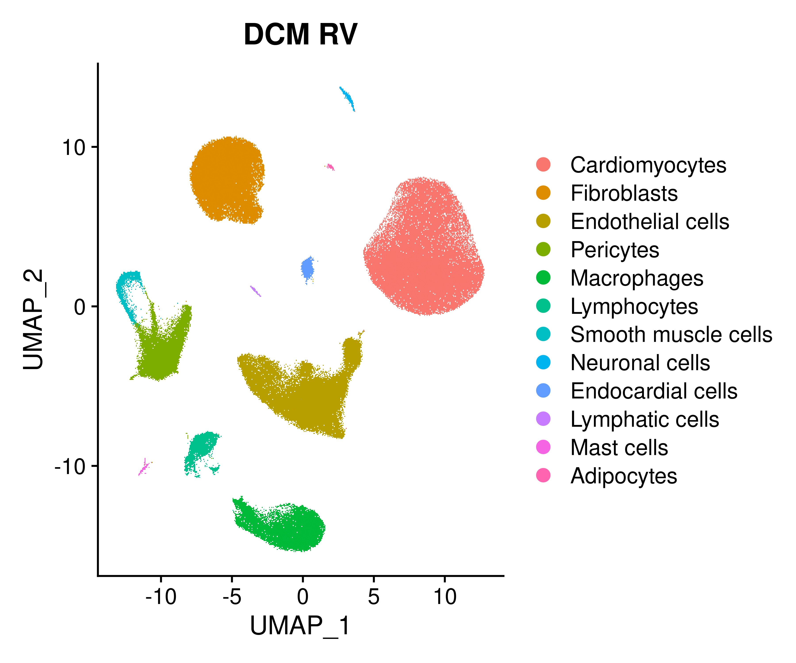
| Version | Author | Date |
|---|---|---|
| e4005f9 | GinoBonazza | 2025-02-26 |
genes_DCM_RV <- data.frame(gene = rownames(DCM_RV))
lncrna_symbol %in% genes_DCM_RV$gene[1] TRUE TRUE TRUE TRUE TRUEDCM_RV_dotplot <- DotPlot(DCM_RV, features=lncrna_symbol, group.by="cell_type") +
theme(axis.text.x = element_text(angle = 45, hjust = 1, size = 14),
axis.text.y = element_text(size = 14),
axis.title.x = element_blank(),
axis.title.y = element_blank()) +
scale_y_discrete(limits = rev) +
ggtitle("DCM RV")
DCM_RV_dotplot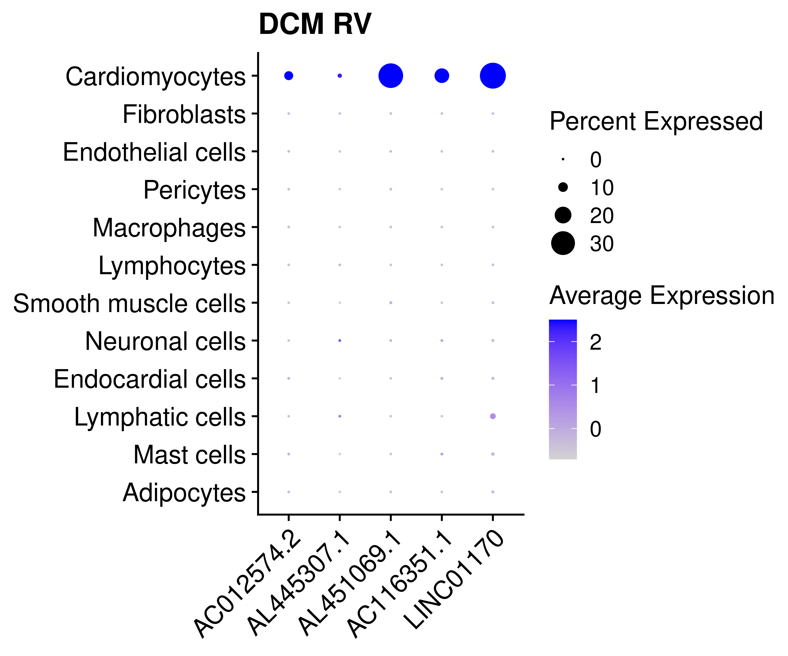
| Version | Author | Date |
|---|---|---|
| e4005f9 | GinoBonazza | 2025-02-26 |
DCM_RV_vlnplot <- Stacked_VlnPlot(DCM_RV, features = lncrna_symbol, x_lab_rotate = TRUE, pt.size = 0.001, plot_spacing = 0.05)
DCM_RV_vlnplot[[1]][[1]]$layers[[2]]$aes_params$alpha <- 0.3
DCM_RV_vlnplot[[2]][[1]]$layers[[2]]$aes_params$alpha <- 0.3
DCM_RV_vlnplot[[3]][[1]]$layers[[2]]$aes_params$alpha <- 0.3
DCM_RV_vlnplot[[4]][[1]]$layers[[2]]$aes_params$alpha <- 0.3
DCM_RV_vlnplot[[5]][[1]]$layers[[2]]$aes_params$alpha <- 0.3
DCM_RV_vlnplot <- wrap_plots(DCM_RV_vlnplot) +
plot_annotation(title = "DCM RV") &
theme(plot.title = element_text(hjust = 0.5,
face = "bold",
size = 15)
)
print(DCM_RV_vlnplot)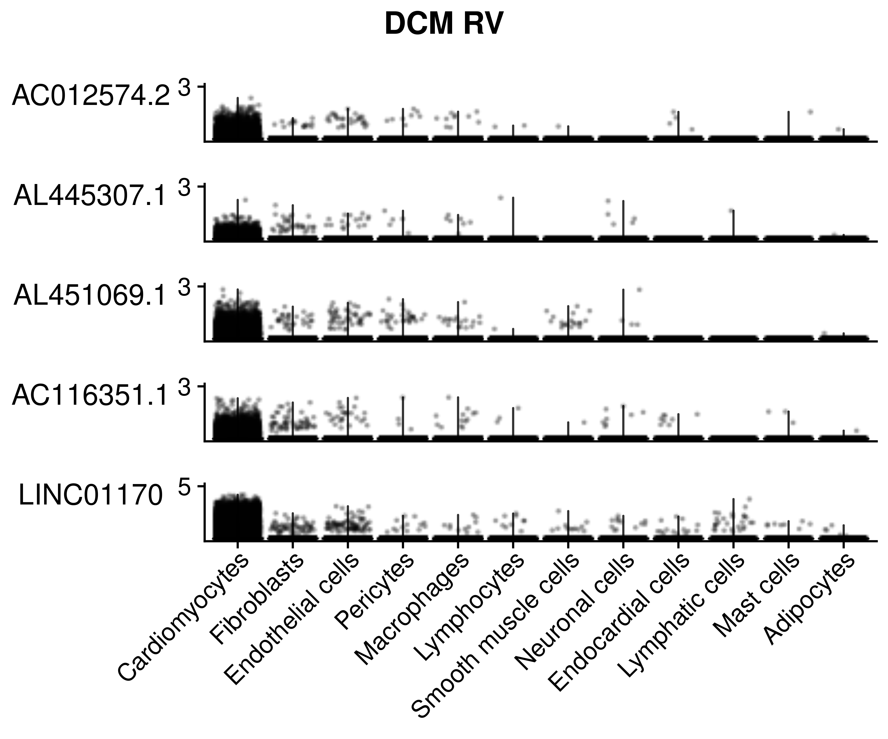
| Version | Author | Date |
|---|---|---|
| e4005f9 | GinoBonazza | 2025-02-26 |
DCM_RV_featureplot <- FeaturePlot_scCustom(DCM_RV, features = lncrna_symbol, num_columns = 3)
DCM_RV_featureplot <- wrap_plots(DCM_RV_featureplot) +
plot_annotation(title = "DCM RV") &
theme(plot.title = element_text(hjust = 0.5,
face = "bold",
size = 20)
)
print(DCM_RV_featureplot)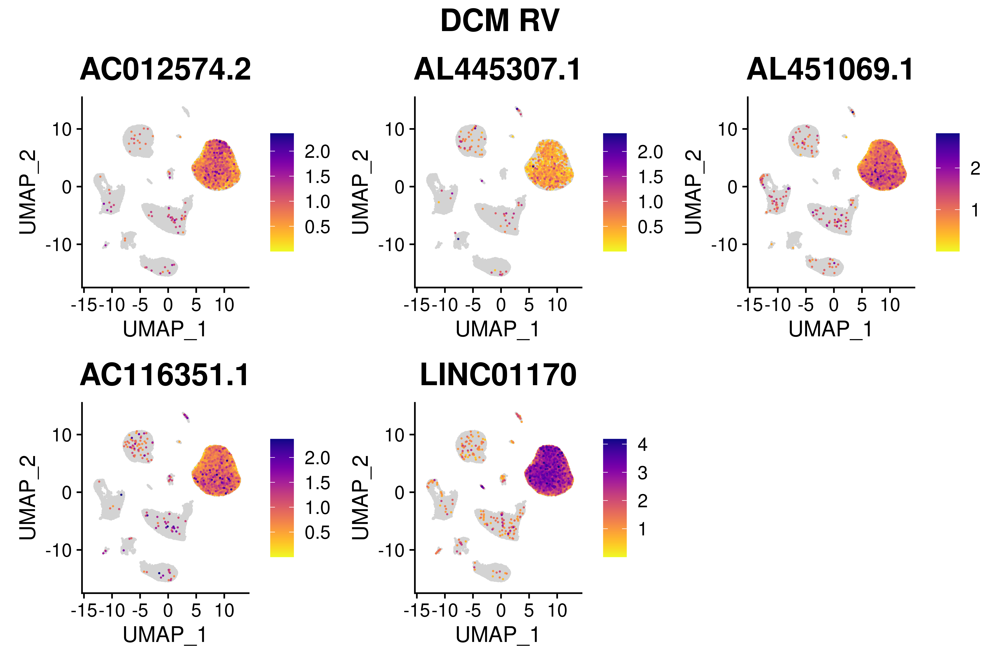
| Version | Author | Date |
|---|---|---|
| e4005f9 | GinoBonazza | 2025-02-26 |
DCM_RV_CM <- subset(DCM_RV, cell_type %in% c("Cardiomyocytes"))
metadata <- DCM_RV_CM@meta.data %>%
dplyr::select(Sample, Group) %>%
unique()
rownames(metadata) <- metadata$Sample
reactable(metadata,
filterable = TRUE,
searchable = TRUE,
showPageSizeOptions = TRUE)Remove genes expressed in <1% of cells
expr_matrix <- GetAssayData(object = DCM_RV_CM, assay = "RNA", slot = "counts")
non_zero_cells <- rowSums(expr_matrix > 0)
total_cells <- ncol(expr_matrix)
percent_cells <- (non_zero_cells / total_cells) * 100
percent_stats <- data.frame(gene = rownames(expr_matrix), percentCells = percent_cells)
keep_genes <- rownames(dplyr::filter(percent_stats, percentCells > 1))
data <- DCM_RV_CM[which(rownames(DCM_RV_CM) %in% keep_genes),]
rm(keep_genes, non_zero_cells, expr_matrix, total_cells, percent_cells)
pseudocounts <- Seurat2PB(data, sample="Sample", cluster = "cell_type")
colnames(pseudocounts) <- pseudocounts$samples$sample
pseudocounts <- pseudocounts[, match(metadata$Sample, pseudocounts$samples$sample)]
all(metadata$donor_id == pseudocounts$samples$sample)[1] TRUEkeep_samples <- pseudocounts$samples$lib.size > 5e4
pseudocounts <- pseudocounts[, keep_samples]
keep_genes <- filterByExpr(pseudocounts)
pseudocounts <- pseudocounts[keep_genes, ]
rm(keep_samples, keep_genes, data)metadata$Group <- factor(metadata$Group, levels = c("HC", "DCM"))
design<- model.matrix(~ Group, data = metadata)
pseudocounts <- normLibSizes(pseudocounts)
pseudocounts <- estimateDisp(pseudocounts, design)
fit <- glmQLFit(pseudocounts, design, robust=TRUE)
fit <- glmQLFTest(fit, coef = 2)
results_DCM_RV <- topTags(fit, n = Inf)$table
results_DCM_RV <- merge(results_DCM_RV, percent_stats[, c("gene", "percentCells")], by = "gene", all.x = FALSE)
results_DCM_RV$up_down <- ifelse(
results_DCM_RV$logFC > 0.5 & results_DCM_RV$FDR < 0.05, "Increased",
ifelse(results_DCM_RV$logFC < -0.5 & results_DCM_RV$FDR < 0.05, "Decreased",
"Not significant"
)
)
results_DCM_RV_lncRNA <- results_DCM_RV %>%
dplyr::filter(gene %in% lncrna_symbol)
reactable(results_DCM_RV_lncRNA,
filterable = TRUE,
searchable = TRUE,
showPageSizeOptions = TRUE)counts <- cpm(pseudocounts, log = TRUE)
counts <- counts[rownames(counts) %in% results_DCM_RV_lncRNA$gene, , drop = FALSE]
metadata_matched <- metadata[match(colnames(counts), metadata$Sample), ]
stopifnot(all(colnames(counts) == metadata_matched$Sample))
order_idx <- order(metadata_matched$Group)
counts <- counts[, order_idx]
metadata_matched <- metadata_matched[order_idx, ]
heat_colors <- rev(brewer.pal(11, "PuOr"))
pheatmap::pheatmap(counts,
color = heat_colors,
cluster_rows = F,
annotation_col = dplyr::select(metadata, Group),
border_color = NA,
fontsize = 10,
scale = "row",
cluster_cols=F,
fontsize_row = 15,
show_rownames = T,
show_colnames = F,
cellheight = 15,
legend_breaks = c(-1.5, 0, 1.5)
)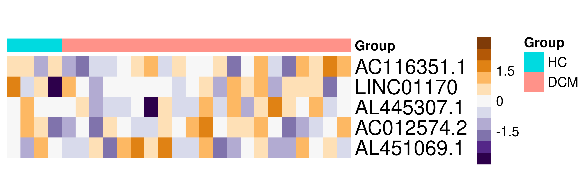
rm(DCM_RV)Cao et al. 2020
Cao <- readRDS("/scratch/gbonaz/Heart_datasets/Cao_2020/Heart_gene_count.RDS")
Cao_genes <- readRDS("/scratch/gbonaz/Heart_datasets/Cao_2020/df_gene.RDS")
Cao_cell <- readRDS("/scratch/gbonaz/Heart_datasets/Cao_2020/df_cell.RDS")
Cao_cell <- Cao_cell[match(colnames(Cao), Cao_cell$sample), ]
Cao_genes <- Cao_genes[match(rownames(Cao), rownames(Cao_genes)), ]
cao_seurat <- CreateSeuratObject(
counts = Cao,
meta.data = Cao_cell,
assay = "RNA",
project = "Cao_2020"
)
cao_seurat[["RNA"]]@meta.features <- Cao_genes
Cao <- cao_seurat
DefaultAssay(Cao) <- "RNA"
Cao <- NormalizeData(Cao)Cao_dimplot <- DimPlot(Cao, group.by = "Main_cluster_name") + ggtitle("Cao et al. 2020")
Cao_dimplotlncrna_Cao <- c("ENSG00000254002.1", "ENSG00000228692.2", "ENSG00000226900.1", "ENSG00000215246.4", "ENSG00000253807.1")
lncrna_Cao %in% Cao_genes$gene_id[1] TRUE TRUE TRUE TRUE TRUEtable(is.na(Cao$Main_cluster_name))
FALSE TRUE
101749 51383 Cao$Main_cluster_name[is.na(Cao$Main_cluster_name)] <- "Unassigned"Cao_dotplot <- DotPlot(Cao, features=lncrna_Cao, group.by="Main_cluster_name", scale = F, assay = "RNA") +
theme(axis.text.x = element_text(angle = 45, hjust = 1, size = 14),
axis.text.y = element_text(size = 14),
axis.title.x = element_blank(),
axis.title.y = element_blank()) +
ggtitle("Cao et al. 2020")
Cao_dotplot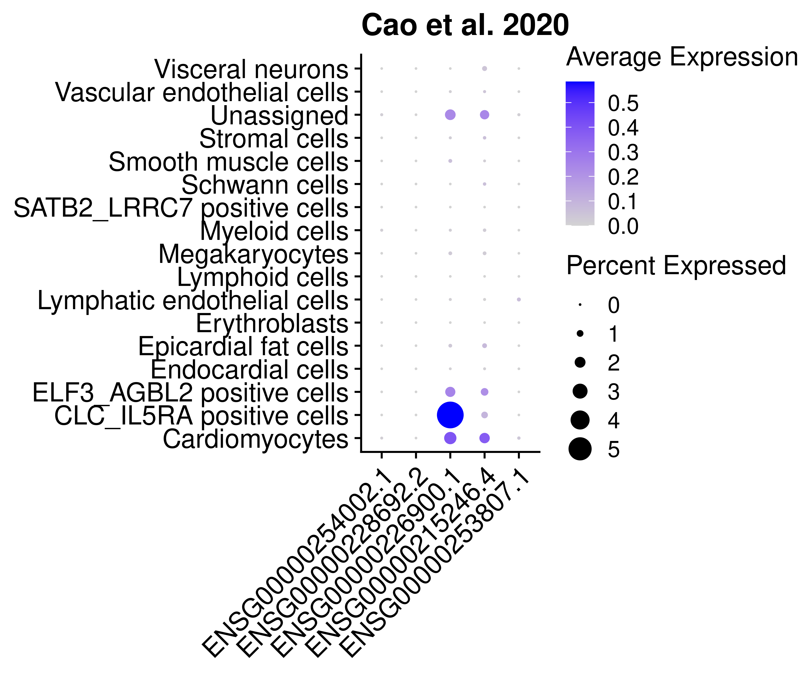
Idents(Cao) <- "Main_cluster_name"
Cao_vlnplot <- Stacked_VlnPlot(Cao, features = lncrna_Cao, x_lab_rotate = TRUE, pt.size = 0.001, plot_spacing = 0.05)
Cao_vlnplot[[1]][[1]]$layers[[2]]$aes_params$alpha <- 0.3
Cao_vlnplot[[2]][[1]]$layers[[2]]$aes_params$alpha <- 0.3
Cao_vlnplot[[3]][[1]]$layers[[2]]$aes_params$alpha <- 0.3
Cao_vlnplot[[4]][[1]]$layers[[2]]$aes_params$alpha <- 0.3
Cao_vlnplot[[5]][[1]]$layers[[2]]$aes_params$alpha <- 0.3
Cao_vlnplot <- wrap_plots(Cao_vlnplot) +
plot_annotation(title = "Cao et al. 2020") &
theme(plot.title = element_text(hjust = 0.5,
face = "bold",
size = 15)
)
print(Cao_vlnplot)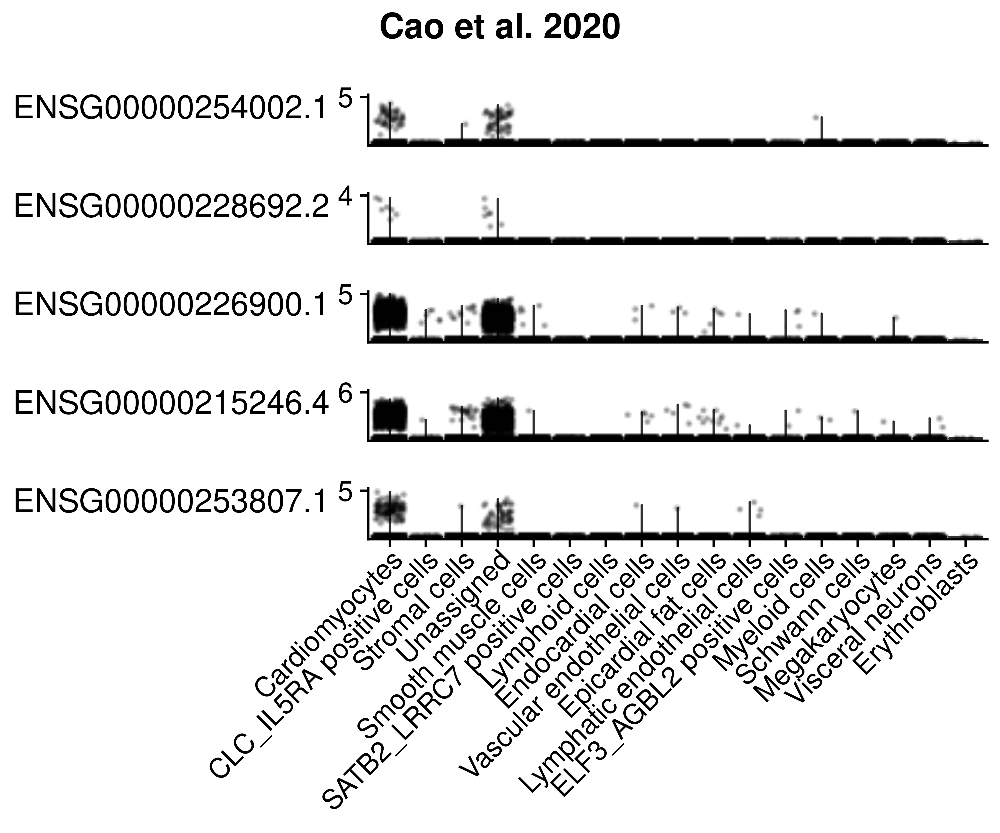
Cao_CM <- subset(Cao, Main_cluster_name %in% c("Cardiomyocytes"))
metadata <- Cao_CM@meta.data %>%
dplyr::select(Fetus_id, Development_day) %>%
unique()
rownames(metadata) <- metadata$Fetus_id
reactable(metadata,
filterable = TRUE,
searchable = TRUE,
showPageSizeOptions = TRUE)Remove genes expressed in <1% of cells
expr_matrix <- GetAssayData(object = Cao_CM, assay = "RNA", slot = "counts")
non_zero_cells <- rowSums(expr_matrix > 0)
total_cells <- ncol(expr_matrix)
percent_cells <- (non_zero_cells / total_cells) * 100
percent_stats <- data.frame(gene = rownames(expr_matrix), percentCells = percent_cells)
keep_genes <- rownames(dplyr::filter(percent_stats, percentCells > 1))
data <- Cao_CM[which(rownames(Cao_CM) %in% keep_genes),]
rm(keep_genes, non_zero_cells, expr_matrix, total_cells, percent_cells)
pseudocounts <- Seurat2PB(data, sample="Fetus_id", cluster = "Main_cluster_name")
colnames(pseudocounts) <- pseudocounts$samples$sample
pseudocounts <- pseudocounts[, match(metadata$Fetus_id, pseudocounts$samples$sample)]
all(metadata$donor_id == pseudocounts$samples$sample)[1] TRUEkeep_samples <- pseudocounts$samples$lib.size > 5e4
pseudocounts <- pseudocounts[, keep_samples]
keep_genes <- filterByExpr(pseudocounts)
pseudocounts <- pseudocounts[keep_genes, ]
rm(keep_samples, keep_genes, data)design<- model.matrix(~ metadata$Development_day)
pseudocounts <- normLibSizes(pseudocounts)
pseudocounts <- estimateDisp(pseudocounts, design)
fit <- glmQLFit(pseudocounts, design, robust=TRUE)
fit <- glmQLFTest(fit, coef = 2)
results_Cao <- topTags(fit, n = Inf)$table
results_Cao <- merge(results_Cao, percent_stats[, c("gene", "percentCells")], by = "gene", all.x = FALSE)
results_Cao$up_down <- ifelse(
results_Cao$logFC > 0.5 & results_Cao$FDR < 0.05, "Increased",
ifelse(results_Cao$logFC < -0.5 & results_Cao$FDR < 0.05, "Decreased",
"Not significant"
)
)
results_Cao_lncRNA <- results_Cao %>%
dplyr::filter(gene %in% lncrna_Cao)
reactable(results_Cao_lncRNA,
filterable = TRUE,
searchable = TRUE,
showPageSizeOptions = TRUE)counts <- cpm(pseudocounts, log = TRUE)
counts <- counts[rownames(counts) %in% results_Cao_lncRNA$gene, , drop = FALSE]
metadata_matched <- metadata[match(colnames(counts), metadata$Fetus_id), ]
stopifnot(all(colnames(counts) == metadata_matched$Fetus_id))
order_idx <- order(metadata_matched$Development_day)
counts <- counts[, order_idx]
metadata_matched <- metadata_matched[order_idx, ]
heat_colors <- rev(brewer.pal(11, "PuOr"))
pheatmap::pheatmap(counts,
color = heat_colors,
cluster_rows = F,
annotation_col = dplyr::select(metadata, Development_day),
border_color = NA,
fontsize = 10,
scale = "row",
cluster_cols=F,
fontsize_row = 15,
show_rownames = T,
show_colnames = F,
cellheight = 15,
legend_breaks = c(-1.5, 0, 1.5)
)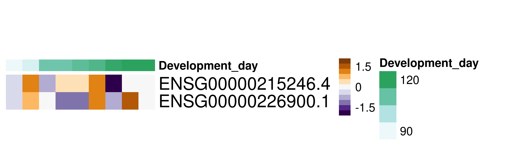
rm(Cao)
sessionInfo()R version 4.3.1 (2023-06-16)
Platform: x86_64-pc-linux-gnu (64-bit)
Running under: Ubuntu 22.04.4 LTS
Matrix products: default
BLAS: /usr/lib/x86_64-linux-gnu/openblas-pthread/libblas.so.3
LAPACK: /usr/lib/x86_64-linux-gnu/openblas-pthread/libopenblasp-r0.3.20.so; LAPACK version 3.10.0
locale:
[1] LC_CTYPE=en_US.UTF-8 LC_NUMERIC=C
[3] LC_TIME=en_US.UTF-8 LC_COLLATE=en_US.UTF-8
[5] LC_MONETARY=en_US.UTF-8 LC_MESSAGES=en_US.UTF-8
[7] LC_PAPER=en_US.UTF-8 LC_NAME=en_US.UTF-8
[9] LC_ADDRESS=en_US.UTF-8 LC_TELEPHONE=en_US.UTF-8
[11] LC_MEASUREMENT=en_US.UTF-8 LC_IDENTIFICATION=en_US.UTF-8
time zone: Etc/UTC
tzcode source: system (glibc)
attached base packages:
[1] grid stats4 stats graphics grDevices utils datasets
[8] methods base
other attached packages:
[1] edgeR_4.0.16 limma_3.58.1
[3] ggpubr_0.6.0 igraph_2.0.3
[5] biomaRt_2.58.2 simplifyEnrichment_1.12.0
[7] msigdbr_7.5.1 UpSetR_1.4.0
[9] reactable_0.4.4 rtracklayer_1.62.0
[11] speckle_1.2.0 SeuratDisk_0.0.0.9021
[13] ReactomePA_1.46.0 AnnotationHub_3.10.0
[15] BiocFileCache_2.10.1 dbplyr_2.4.0
[17] org.Hs.eg.db_3.18.0 AnnotationDbi_1.64.1
[19] statmod_1.5.0 patchwork_1.2.0
[21] scater_1.30.1 scuttle_1.12.0
[23] Matrix.utils_0.9.7 RColorBrewer_1.1-3
[25] scales_1.3.0 knitr_1.45
[27] gridExtra_2.3 png_0.1-8
[29] pheatmap_1.0.12 SingleCellExperiment_1.24.0
[31] SummarizedExperiment_1.32.0 Biobase_2.62.0
[33] GenomicRanges_1.54.1 GenomeInfoDb_1.38.7
[35] IRanges_2.36.0 MatrixGenerics_1.14.0
[37] matrixStats_1.2.0 S4Vectors_0.40.2
[39] BiocGenerics_0.48.1 reshape2_1.4.4
[41] lubridate_1.9.3 forcats_1.0.0
[43] stringr_1.5.1 purrr_1.0.2
[45] tidyr_1.3.1 tibble_3.2.1
[47] tidyverse_2.0.0 magrittr_2.0.3
[49] ggplot2_3.5.0 dplyr_1.1.4
[51] scCustomize_2.1.2 Matrix_1.6-5
[53] SeuratObject_5.0.2 Seurat_4.4.0
[55] xlsx_0.6.5 readxl_1.4.3
[57] readr_2.1.5 here_1.0.1
loaded via a namespace (and not attached):
[1] progress_1.2.3 goftest_1.2-3
[3] Biostrings_2.70.2 vctrs_0.6.5
[5] spatstat.random_3.2-3 digest_0.6.35
[7] shape_1.4.6.1 git2r_0.33.0
[9] ggrepel_0.9.5 deldir_2.0-4
[11] parallelly_1.37.1 MASS_7.3-60.0.1
[13] foreach_1.5.2 httpuv_1.6.14
[15] qvalue_2.34.0 withr_3.0.0
[17] ggrastr_1.0.2 xfun_0.42
[19] ggfun_0.1.4 ellipsis_0.3.2
[21] survival_3.5-8 proxyC_0.4.1
[23] memoise_2.0.1 ggbeeswarm_0.7.2
[25] janitor_2.2.0 gson_0.1.0
[27] tidytree_0.4.6 zoo_1.8-12
[29] GlobalOptions_0.1.2 pbapply_1.7-2
[31] prettyunits_1.2.0 rematch2_2.1.2
[33] KEGGREST_1.42.0 promises_1.2.1
[35] httr_1.4.7 rstatix_0.7.2
[37] restfulr_0.0.15 globals_0.16.3
[39] fitdistrplus_1.1-11 rstudioapi_0.15.0
[41] miniUI_0.1.1.1 generics_0.1.3
[43] DOSE_3.28.2 reactome.db_1.86.2
[45] babelgene_22.9 curl_5.2.1
[47] zlibbioc_1.48.0 ScaledMatrix_1.10.0
[49] ggraph_2.2.1 polyclip_1.10-6
[51] GenomeInfoDbData_1.2.11 SparseArray_1.2.4
[53] interactiveDisplayBase_1.40.0 doParallel_1.0.17
[55] xtable_1.8-4 evaluate_0.23
[57] S4Arrays_1.2.1 hms_1.1.3
[59] irlba_2.3.5.1 colorspace_2.1-0
[61] filelock_1.0.3 hdf5r_1.3.10
[63] NLP_0.3-0 ROCR_1.0-11
[65] reticulate_1.35.0 spatstat.data_3.0-4
[67] lmtest_0.9-40 snakecase_0.11.1
[69] later_1.3.2 viridis_0.6.5
[71] ggtree_3.10.1 lattice_0.22-5
[73] spatstat.geom_3.2-9 future.apply_1.11.1
[75] scattermore_1.2 XML_3.99-0.16.1
[77] shadowtext_0.1.3 cowplot_1.1.3
[79] RcppAnnoy_0.0.22 pillar_1.9.0
[81] nlme_3.1-164 iterators_1.0.14
[83] compiler_4.3.1 beachmat_2.18.1
[85] stringi_1.8.3 tensor_1.5
[87] GenomicAlignments_1.38.2 plyr_1.8.9
[89] BiocIO_1.12.0 crayon_1.5.2
[91] abind_1.4-5 gridGraphics_0.5-1
[93] locfit_1.5-9.9 sp_2.1-3
[95] graphlayouts_1.1.1 bit_4.0.5
[97] fastmatch_1.1-4 whisker_0.4.1
[99] codetools_0.2-19 BiocSingular_1.18.0
[101] crosstalk_1.2.1 slam_0.1-53
[103] bslib_0.6.1 paletteer_1.6.0
[105] GetoptLong_1.0.5 tm_0.7-14
[107] plotly_4.10.4 mime_0.12
[109] splines_4.3.1 circlize_0.4.16
[111] Rcpp_1.0.12 sparseMatrixStats_1.14.0
[113] prismatic_1.1.1 HDO.db_0.99.1
[115] cellranger_1.1.0 grr_0.9.5
[117] blob_1.2.4 utf8_1.2.4
[119] clue_0.3-65 BiocVersion_3.18.1
[121] fs_1.6.3 listenv_0.9.1
[123] DelayedMatrixStats_1.24.0 ggsignif_0.6.4
[125] ggplotify_0.1.2 tzdb_0.4.0
[127] tweenr_2.0.3 pkgconfig_2.0.3
[129] tools_4.3.1 cachem_1.0.8
[131] RSQLite_2.3.5 viridisLite_0.4.2
[133] DBI_1.2.2 graphite_1.48.0
[135] fastmap_1.1.1 rmarkdown_2.26
[137] ica_1.0-3 Rsamtools_2.18.0
[139] broom_1.0.5 sass_0.4.9
[141] ggprism_1.0.4 BiocManager_1.30.22
[143] dotCall64_1.1-1 carData_3.0-5
[145] graph_1.80.0 RANN_2.6.1
[147] farver_2.1.1 tidygraph_1.3.1
[149] scatterpie_0.2.1 yaml_2.3.8
[151] workflowr_1.7.1 cli_3.6.2
[153] leiden_0.4.3.1 lifecycle_1.0.4
[155] uwot_0.1.16 backports_1.4.1
[157] BiocParallel_1.36.0 rjson_0.2.21
[159] timechange_0.3.0 gtable_0.3.4
[161] ggridges_0.5.6 progressr_0.14.0
[163] parallel_4.3.1 ape_5.7-1
[165] jsonlite_1.8.8 bitops_1.0-7
[167] bit64_4.0.5 Rtsne_0.17
[169] yulab.utils_0.1.4 spatstat.utils_3.1-0
[171] BiocNeighbors_1.20.2 highr_0.10
[173] jquerylib_0.1.4 GOSemSim_2.28.1
[175] reactR_0.6.0 lazyeval_0.2.2
[177] shiny_1.8.0 htmltools_0.5.8.1
[179] rJava_1.0-11 enrichplot_1.22.0
[181] GO.db_3.18.0 sctransform_0.4.1
[183] rappdirs_0.3.3 glue_1.7.0
[185] spam_2.10-0 XVector_0.42.0
[187] RCurl_1.98-1.14 rprojroot_2.0.4
[189] treeio_1.26.0 R6_2.5.1
[191] labeling_0.4.3 xlsxjars_0.6.1
[193] cluster_2.1.6 aplot_0.2.2
[195] DelayedArray_0.28.0 tidyselect_1.2.1
[197] vipor_0.4.7 xml2_1.3.6
[199] ggforce_0.4.2 car_3.1-2
[201] future_1.33.1 rsvd_1.0.5
[203] munsell_0.5.0 KernSmooth_2.23-22
[205] data.table_1.15.2 ComplexHeatmap_2.18.0
[207] htmlwidgets_1.6.4 fgsea_1.28.0
[209] rlang_1.1.4 spatstat.sparse_3.0-3
[211] spatstat.explore_3.2-6 Cairo_1.6-2
[213] fansi_1.0.6 beeswarm_0.4.0